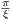
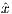
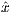
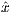
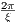
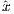
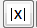
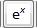
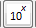
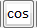

MRiLab v1.1 User Guide
Fang Liu
(leoliuf@gmail.com)
January 28, 2014
Preface
Numerical MRI simulation can dramatically speed the understanding and
development of new MR imaging methods. In this work, a new simulation package
named ’MRiLab’ has been invented for performing fast 3D parallel MRI numerical
simulation on regular desktop computer. This simulation package is aimed to provide
a fast, comprehensive and effective numerical MRI simulation solution with minimum
computing hardware requirement.
This manual is aimed to provide a comprehensive introduction to various
functions included in MRiLab package, through demonstrating a workflow of
simulation, dedicated toolboxes and built-in libraries capable of customizing various
aspects of MR simulation experiment. You should become familiar and comfortable
with all the design functions available in MRiLab after reading this User
Guide.
It’s my greatest pleasure to know that MRiLab can help you in your MR research
and/or education. Please don’t hesitate to leave me feedback about any aspect of
MRiLab and/or about this User Guide. All the effects for improving MRiLab will
hopefully help MR researchers including myself for better understanding and
improving future MR techniques.
Chapter 1
Introduction
1.1 What is MRiLab
The MRiLab is a numerical MRI simulation package. It has been invented and
developed to simulate MR signal formation, K-Space acquisition and MR image
reconstruction. MRiLab provides several dedicated toolboxes for MR researchers to
analyze RF pulse, design MR sequence, configure multiple transmitting and receiving
coils, investigate field inhomogeneity and test real-time imaging technique
etc. The main MRiLab simulation platform combined with these toolboxes
can be applied for customizing various virtual MR experiments which can
serve as a prior stage for prototyping and testing new MR technique and
application.
The MRiLab features highly interactive graphical user interface (GUI) for the
ease of fast experiment design and technique prototyping. A high simulation accuracy
is achieved by simulating discrete spin evolution at small time interval using the
Bloch-equation and appropriate spin model. In order to manipulate large
multidimensional spin array, MRiLab employs parallel computing by incorporating
latest GPU technique and multi-threading CPU technique. Benefit from the
accelerated computing, MRiLab can accomplish multidimensional multiple spin
species MR simulation with high simulation accuracy and time efficiency, and with
low computing hardware cost.
1.2 Obtaining MRiLab
The current MRiLab version (v1.1) is made available at SourceForge website.
MRiLab is released as a free software. This means that you are free to use and
modify this software as your needs, as long as you acknowledge the original author in
any future work. If you find MRiLab useful for the publication of any scientific
results, including a line in your acknowledgments section referencing to MRiLab and
this belowing address is requested.
MRiLab downloading address:
1.3 Installing and Running MRiLab
To run MRiLab, a Matlab installment is required. The current MRiLab version has
been tested under the following Matlab versions:
- Matlab R2011a 64-bit Windows
- Matlab R2013a 64-bit Windows
- Matlab R2012b 64-bit Unix
Installing and running MRiLab is easy, you just need to download MRiLab source
code which is distributed as a compressed file, then extract the MRiLab root
folder, put the folder to any location in you computer. To run MRiLab, start
Matlab, then simply run the ‘MRiLab.m’ script under the MRiLab root folder.
The graphical user interface in MRiLab is developed under Matlab GUIDE
environment. Most of the simulation configuration code is programmed using
pure Matlab language and Extensible Markup Language (XML), however,
the computation intensive functions are programmed and optimized using
MATLAB Executable (MEX) C code. These MEX binaries includes all the
computing kernels that interact with GPU device via NVIDIA CUDA and
with multi-core CPU via OpenMP. Some three-dimensional image rendering
functions are also programmed using Visualization Toolkit (VTK) and compiled
into MEX. These MEX binary library files have been built under 64-bit
Windows and Linux OS system and shipped with MRiLab source code, so
the user should be able to use these files under 64-bit Windows and Linux
without the need of recompiling. However, if these MEX files are incompatible
with your OS system for any reason or if you wish to modify these MEX
files for your own needs, you have to recompile them using the source code.
Before recompiling these MEX files, some dependent packages are required.
- CMake (required)
The MRiLab uses CMake for cross platform building for these MEX files.
CMake : http://www.cmake.org/cmake/resources/software.html
- IPP or Framewave (required)
The current MRiLab version uses Intel IPP or AMD Framewave libraries
for large scale matrix manipulation. Please notice that Intel IPP isn’t a
free open source software, however if you are planning to use MRiLab
IPP version (i), you can download Intel C Studio XE which includes IPP
distribution and follow Intel’s non-commercial license for non-commercial
usage. As an alternative, MRiLab provides Framewave version (f) which
only uses Framewave libraries. The Framewave is released as a free open
source library.
Intel IPP : http://software.intel.com/en-us/intel-ipp
AMD Framewave : http://framewave.sourceforge.net
- CUDA (optional)
A properly installed NVIDIA GPU driver is required for running GPU
devices and also for MRiLab to interact with GPU devices. The current
MRiLab version only supports GPU cards which support NVIDIA CUDA
technique. The libraries from CUDA 5.0 are compiled against for shipped
MEX files in the MRiLab distribution.
NVIDIA : http://www.nvidia.com/page/home.html
CUDA : http://www.nvidia.com/object/cuda_home_new.html
Although the GPU acceleration dramatically improves computational
efficiency for MRiLab, the GPU computing mode is also optional.
Alternatively, MRiLab provides multi-threading CPU computing mode
via OpenMP which requires no additional packages on most of today’s
operating system, but provides comparable computational efficiency
compared to GPU mode.
- VTK (optional)
The VTK library is used to effectively render 3D K-Space trajectory and
complex image object in three-dimensional space. The current MRiLab
version uses MEX built against VTK 5.10. However, VTK rendering is
optional since native Matlab rendering is also provided.
VTK : http://www.vtk.org
- ISMRMRD (optional)
MRiLab supports data conversion from Matlab variables to ISMRMRD
which is used as a default data storage format by Gadgetron MRI image
reconstruction framework. To enable Gadgetron function, the user needs
to install ISMRMRD dependency packages in order to compile data
conversion MEX.
ISMRMRD :
http://ismrmrd.sourceforge.net/#obtaining-and-installing
After installing above mentioned necessary dependent packages, you also need to
set a few environment variables in your system :
- MATLAB_ROOT : Matlab root folder path
- IPP_ROOT : IPP root folder path if IPP is used
- FRAMEWAVE_ROOT : Framewave root folder path if Framewave is used
Notice that the C source code for these MEX files is under /MRiLab/Lib/src
folder. To compile and install MEX files
- Linux Installation
The command line that compiles the MEX files is
mkdir build
cd build
cmake MRiLab/Lib/src
make
sudo make install
You can also use cmake-gui for configuration and other building tools (e.g.
Eclipse) for building the binaries.
- Windows Installation
It is recommended to use cmake-gui for generating Visual Studio projects, then
build the projects in Visual Studio.
- Step 1 : Locate source folder and build folder in cmake-gui (Figure
1.1)
- Step 2 : Configure and generate Visual Studio projects in cmake-gui
(Figure 1.2)
- Step 3 : Build the INSTALL project, compiled MEX binaries will
be copied to MRiLab/Lib/bin folder by default (Figure 1.3)
If installation problems do occur to you, feel free to let me know and I may help
you out. For your information, I provide here my development environment (Table
1.1) for the current MRiLab version.
|
|
|
|
|
|
| Environment | Desktop | Laptop |
|
|
|
| Machine | Dell Precision T3500 | Lenovo Thinkpad R61 |
| CPU | Intel Xeon W3530 | Intel Core2 Duo T8100 |
| GPU | NVIDIA Quadro 4000 | Null |
| OS | Windows 7 64-bit | Linux Fedora 16 64-bit |
| Matlab | Matlab R2013a 64-bit | Matlab R2012b 64-bit |
| C Compiler | Visual Studio 10 Win64 | GCC 4.6.3 |
| VTK | VTK 5.10 | VTK 5.10 |
| CUDA | CUDA 5.0 | Null |
| IPP | Intel IPP 7.0 | Intel IPP 7.0 |
| Framewave | AMD Framewave 1.3 | AMD Framewave 1.3 |
|
|
|
| |
Table 1.1: Fang’s Computer Environment
Chapter 2
Platform Overview
2.1 MRiLab Simulation Platform
The MRiLab simulation platform consists of
- A Main Simulation Control Console
The main simulation control console (Figure 2.1) behaves analogous
to a MR scanner console for graphically adjusting imaging setup and
conducting simulation control. Simulation feedback are instantly updated
on corresponding information panels during the simulation process.
- Design Toolboxes
The Design toolboxes (Figure 2.2) provide independent interfaces for designing
RF pulse (e.g. SLR, non-adiabatic and adiabatic pulse etc.), for constructing
arbitrary pulse sequence (e.g. SPGR, SSFP and FSE etc.), for configuring coil
profile and main static magnet field (i.e. B1 and B0 field) and for designing
imaging object moving track. Dedicated image display and analysis
tools (SpinWatcher, MatrixUser and arrayShow) are also developed
and tailored to work with MRiLab simulated high dimensional MR
images.
- Discrete Bloch-equation Solving Kernels
The Bloch-equation solving kernels manipulate tissue spin evolution at small
discrete time interval in order to accurately simulate spin behavior given a
desired spin model and MR sequences. These kernels are accelerated
using Matlab MEX functions that are optimized for running GPU and
multi-threading CPU parallel computing techniques. Moreover, these kernels
are also capable of preprocessing acquired MR signal and K-Space locations
prior to desirable image reconstruction. Further image reconstruction with
stored K-Space data is accomplished in corresponding reconstruction
module.
- Macro Library
MRiLab uses a concept of macros for simplifying experiment design. A macro
in MRiLab is defined as a programming-free module that can be added,
removed and modified in the process of constructing MR sequence, coil profile,
magnet field and object moving track, etc. For instance, a Sinc RF pulse
(rfSinc) is considered as a RF macro that can be used for constructing a
gradient echo sequence, and the attributes of this macro include pulse starting
time (tStart), pulse ending time (tEnd) and the time bandwidth product
(TBP) etc. MRiLab provides a macro library (Figure 2.3) covering a wide
range of macros. Using these predefined macros, you should be able to
accomplish most of experimental design work. However, if special macros are
needed, MRiLab also provides interfaces to work with user-defined
macros. More detailed description for macros is provided in Chapter
5.
MRiLab applies XML files for storing simulation information, which simplifies
simulation experiment modification across different studies. MRiLab also supports
external plugins programmed using either Matlab or C language for creating
extendable simulation system.
2.2 Simulation Workflow
The workflow diagram of MRiLab simulation is shown in Figure 2.4. One typical
simulation requires input of :
- Virtual object (VObj) with specific tissue properties including Rho (spin
density), T1 and T2 etc.
- MR sequence that provides tissue contrast in reconstructed images
- B1 field for RF transmitting and receiving
- Gradient field for spatial encoding
- Magnet field for describing main static field inhomogeneity (dB0)
- Motion pattern for describing imaging object movement during real time
simulation
All the input information gets configured at the MRiLab main control console
where the user can customize any aspect of a simulation experiment. The main
console preprocesses the input information then translates them into kernel signal,
based on which the discrete solving kernel executes each voxel of imaging objects
with either GPU or multi-threading CPU acceleration. The acquired MR signal and
K-Space data from the kernel then passes to image reconstruction module where
either default recon code or external recon tool (e.g. Gadgetron) is applied. The
reconstructed image can be analyzed using MRiLab image display tools including
:
- MatrixUser : An image display and analysis tool for manipulating
multidimensional matrix
- SpinWatcher : An analysis tool for analyzing spin evolution behavior
within a single voxel
- SARWatcher : An analysis tool for analyzing local spatial SAR distribution
- arrayShow : A Matlab image viewer for the evaluation of multidimensional
complex images
2.3 Gradient Echo: Start A Simple Scan
Up to this point, you may wonder how I can start to use MRiLab for imaging
simulation. Below is a simple 3D Gradient Echo (GRE) simulation example for you
to gain some feelings of using MRiLab.
- Open MRiLab by running ‘MRiLab.m’ under the root folder. MRiLab will
try to detect current available CPU and GPU devices, and initialize the
simulation environment. After initialization (typically in couple seconds),
MRiLab Main Simulation Control Console will open. Empty Axial,
Sagittal, Coronal and Preview views show up. Notice that on the console,
several push buttons are disabled at this point, it means more inputs are
needed for activating them.
- To simulate images, the virtual object a.k.a. digital phantom is needed. Go
to ‘Load’, ‘Load Phantom Example’, choose one of the predefined digital
phantoms for the experiment. A few digital phantoms that are suitable
for different experiment purposes are already provided. Here, let’s choose
‘Brain (Standard Resolution 108x90x90)’. After loading this phantom, you
will notice the preview image showing up at the top right corner under
‘VObj Spin Map’ and the property information of this phantom are also
shown in ‘Virtual Object Property. Let’s choose T2 map from the pop-up
menu, and click ‘Localizer’ button to show more image details. Now Axial,
Sagittal and Coronal axes are filled with this 3D digital phantom. Click
‘Update’ button to accept this phantom loading. Notice that after
updating, all push buttons become enabled.
- Since we want to simulate 3D GRE experiment, we need to load 3D GRE
sequence first. Click the ‘Sequence’ button located at the center portion
of the console. A SeqList will open where you can choose and load MR
sequences. Let’s click ‘Dimension’ pop-up menu and choose ‘3D’. The
Category list shows a full list of current available sequence type. Click
‘GradientEcho’, then click ‘PSD_GRE3D’ from the Sequence list. Click
‘Accept’ button to accept and load a 3D GRE sequence. Notice that the
‘Simulation Settings’ tabs on the console update and change to the setting
for the current GRE sequence. Click ‘Update’ button to accept this
sequence loading.
- Under the ‘Imaging’ tab, there are several parameters for imaging control,
for instance, Field-of-View in the frequency encoding direction (FOVFreq).
We can simply accept the default setting at this moment, however, if you
do make any changes, you need to click ‘Update’ button to update
those changes before proceeding to Scan.
- The final step is to click ‘Scan’ button and wait for the simulation to
be performed. Depending on imaging setting and computing hardware,
typically the simulation will finish in a short period of time, the
reconstructed image will be shown in the ‘Preview’ view.
The final looks of this 3D GRE experiment should be somewhat similar to this
(Figure 2.5).
If you managed to simulate this gradient echo image, congratulations! You have
successfully performed your first MRiLab experiment. So you should be prepared for
deeper understanding of MRiLab simulation platform by following the rest of this
user guide.
Chapter 3
Simulation Settings
3.1 Loading Virtual Object
Prior to perform any type of simulation in MRiLab, a virtual object has to be
loaded first. To load virtual object, go to menu ‘Load’ and ‘Load Phantom’
to load a user customized phantom or ‘Load Phantom Example’ to load
MRiLab default phantoms. MRiLab provides a few digital phantoms with MR
properties mimicking several human tissue types (e.g. Brain, Cartilage, Fat,
etc.). After a virtual object being successfully loaded, the geometry of this
phantom will show as a preview thumbnail at the top right corner of the
console (Figure 3.1). The user can inspect phantom property maps of T1,
T2 and Rho etc. using the pop-up menu above the thumbnail. If multiple
spin species exist in the phantom, the user can also inspect different spin
type by using ‘Spin Type’ pop-up menu below the thumbnail. Moreover, a
complete list of phantom property of the virtual object is provided at the
‘Virtual Object Property’ list, the user can check any of them by clicking the
corresponding item. A complete property list of one virtual object typically
include:
- Gyro (rad/s/T) : The gyromagnetic ratio of the spin
- ChemShift (Hz/T) : The chemical shift of the spin
- XDim : The number of voxels in X direction
- YDim : The number of voxels in Y direction
- ZDim : The number of voxels in Z direction
- XDimRes (m) : The voxel size in X direction
- YDimRes (m) : The voxel size in Y direction
- ZDimRes (m) : The voxel size in Z direction
- Type : A description of the type of the spin
- TypeNum : The number of spin species
- Rho : A matrix with the size of Y Dim×XDim×ZDim×TypeNum for
describing spin density
- T1 (s) : A matrix with the size of Y Dim × XDim × ZDim × TypeNum
for describing T1 relaxation time
- T2 (s) : A matrix with the size of Y Dim × XDim × ZDim × TypeNum
for describing T2 relaxation time
- T2Star (s) : A matrix with the size of Y Dim×XDim×ZDim×TypeNum
for describing T2* relaxation time
To inspect more details of the digital phantom, press the ‘Localizer’ button to
populate the thumbnail to the main image display panel. MRiLab provides three
image axes to display axial, sagittal and coronal view section of the three dimensional
virtual object, respectively. A scroll bar beside each axes allows to change image slice
along the corresponding direction, which serves as an anatomical reference for
prescribing simulation parameters. For instance, the location of a green box in each
axes indicating current field of view can be adjusted via free hand dragging, and the
field of view location is instantly updated at ‘Field of View’ panel upon
dragging.
3.2 Loading Sequence
One of the key features of MRiLab is allowing simulating a wide range of
MR sequences and facilitating investigation and optimization of desirable
MR contrast among different tissues. MRiLab provides a sequence loading
interface allowing users to choose predefined sequences from default MRiLab
sequence library, or choose other user customized sequences. MRiLab parses a
selected MR sequence and translates the sequence waveform into specific signal
which triggers simulation kernel execution. The sequence loading interface
provides functions to load MR sequence. A MR sequence design toolbox is
separate from loading interface and will be explained in detail in Chapter
5.
3.2.1 Loading Predefined Sequence
To open a sequence loading interface (Figure 3.2), click the ‘Sequence’ button
located at the center portion of the main control console. Once the interface is open,
the ‘Dimension’ specifies the sequence spatial encoding scheme (2D or 3D). The
‘Category’ provides a list of sequence classes including Gradient Echo, Spin Echo,
Inversion Recovery, Fast Spin Echo, Others and User. Upon clicking one sequence
category, a few sequences belonging to the selected category become available in the
sequence list on the right. Click a sequence, then press ‘Accept’ to load the selected
sequence. pressing ‘Cancel’ button will close the interface without loading any
sequence.
Notice there is a ‘Special Technique (SpecialTech)’ panel below the sequence list.
If a sequence using any of special techniques is selected, the corresponding
checkboxes beside the special techniques will be chosen. For example, by default
PSD_FIESTA3D uses the special techniques called DummyPulse, therefore, by
clicking PSD_FIESTA3D, the DummyPulse will be chosen accordingly. However, you
can uncheck the checkbox for avoiding the DummyPulse module, but this may cause
incomplete simulation for PSD_FIESTA3D. It is recommended to keep default
selection of special techniques therefore a complete sequence control is preserved for
those default sequences. On the other hand, for the sequences that have no special
techniques, you can also add special technique module by checking corresponding
checkbox. This will load parameter tabs of special techniques on the simulation
control console for configuration purpose. The special technique strategy
enables the ability for reusing ‘capsulized’ module for different sequences.
MRiLab provides a few default sequences under the folder /PSD, notice the /PSD
folder uses the same hierarchic structure scheme as that of the loading interface.
Typically a new sequence can be located anywhere in the computer, however it is
recommended to save the sequence under those predefined categories under /PSD
therefore they are visible to the loading interface. However, if a customized sequence
is not directly visible to the loading interface, it can also be loaded using the PSD
loading button marked as ‘o’ at the bottom of the loading interface. If the
PSD loading button is used, loading interface will ignore regular sequence
selection.
3.2.2 Predefined Sequences
MRiLab provides a few predefined MR sequences including
- Fast Spin Echo
- PSD_FSE3D
Three dimensional multishot Fast Spin Echo (FSE) sequence
with interleaved K-Space sampling in Kx-Ky and conventional
phase-encoding along Kz.
- Gradient Echo
- PSD_FIESTA3D
Three dimensional balanced Steady State Free Precession (bSSFP)
sequence.
- PSD_SPGR3D
Three dimensional Spoiled Gradient Echo (SPGR) sequence.
- PSD_GRE3D
Three dimensional gradient echo sequence with Cartesian readout.
- PSD_GRE3DEPI
Three dimensional gradient echo sequence with multishot Echo
Planar Imaging (EPI) readout using interleaved K-Space sampling in
Kx-Ky and conventional phase-encoding along Kz.
- PSD_GRE3DRadial
Three dimensional gradient echo sequence with radial readout in
Kx-Ky and conventional phase-encoding along Kz, usually referred
to as stack-of-stars sequence.
- PSD_GRE3DSpiral
Three dimensional gradient echo sequence with multishot spiral
readout in Kx-Ky and conventional phase-encoding along Kz, referred
to as stack-of-spiral sequence.
- Inversion Recovery
- PSD_IR3D
Three dimensional Inversion Recovery (IR) sequence with Cartesian
readout.
- SpinEcho
- PSD_SE3D
Three dimensional Spin Echo (SE) sequence with Cartesian readout.
- User
- PSD_SPGR3DMT
Three dimensional SPGR sequence with Magnetization Transfer
(MT) saturation. Note that MT phantom is needed for running this
sequence.
- PSD_SPGR3DME
Three dimensional SPGR sequence for Multiple spin pool exchange
(ME) model. Note that ME phantom is needed for running this
sequence.
- Others
- PSD_AFI
Three dimensional SPGR sequence for performing flip angle mapping
using Actual Flip Angle Imaging (AFI) technique [1].
3.3 Loading Coil
To simulate multi-transmitting and receiving coil, MRiLab provides a coil loading
interface allowing to choose different coil configurations for Tx (i.e. Transmitting)
and/or Rx (i.e. Receiving). MRiLab translates the coil configuration and
computes a B1+/B1- field accordingly. For multi-transmitting coil, each coil
element could be treated separately and receives individual RF signal source.
This allows to investigate B1 shimming and multiple RF excitation etc. For
multi-receiving coil, each coil element also connects to an individual signal channel
and produces signal according to its specific coil sensitivity. This allows to
investigate coil encoding methods such as parallel imaging. The coil loading
interface provides functions to load coil configuration. A coil design toolbox is
separate from loading interface and will be explained in detail in Chapter
5.
3.3.1 Loading Predefined Coil
To open a coil loading interface (Figure 3.3), click the ‘Coil’ button located at the
center portion of the console. The ‘Category’ list specifies different coil configuration
category based on anatomical structure. The ‘Coils’ list beside the ‘Category’ list
provides coil configuration belonging to the selected category. Upon clicking a coil
configuration, the interface will calculate the coil sensitivity map and display it in the
preview axes. The user can specify displaying spatial resolution using the ‘Precision’
with a highest spatial resolution defined as the same resolution of digital phantom.
Moreover, the user can specify color map from ‘Jet’,‘Gray’ or ‘Hot’. Pressing ‘Accept’
will load the selected coil configuration. However, pressing ‘Cancel’ button will
close the interface without loading any coil configuration. If an uniform unit
coil sensitivity is desired, press ‘Uniform’ button to load that. By default,
MRiLab uses an uniform unit coil sensitivity for both RF transmitting and
receiving. To indicate an usage of the selected coil configuration, the user has
to specify ‘Coil Type’ as either Tx for transmitting or Rx for receiving.
MRiLab provides a few default coil configuration under the folder /Coil, notice
the /Coil folder uses the same hierarchic structure scheme as that of the loading
interface. Typically a new coil configuration can be located anywhere in the
computer, however it is recommended to save the coil configuration folder under
those predefined categories under /Coil therefore they are visible to the loading
interface. However, if a customized coil configuration is not directly visible to the
loading interface, it can also be loaded using the Coil loading button marked as ‘o’ at
the bottom of the loading interface. If the Coil loading button is used, loading
interface will ignore regular coil selection.
3.3.2 Predefined Coil
MRiLab provides a few predefined coil configuration including
- Head
- Coil_1ChHead
A coil configuration consists of one single Biot-Savart circle, primarily
used for testing purpose.
- Coil_8ChHead
A coil configuration consists of 8 Biot-Savart circles, which produces
relative flat B1 field in X-Y plane along X direction.
- Chest
- Coil_9ChSurfChest
A coil configuration consists of 9 Biot-Savart circles, which produces
relative flat B1 field in X-Y plane along Y direction at the surface
region.
3.4 Loading Magnet
MR simulation studies may need to use non-uniform magnetic field. Those
studies include the ones for investigating susceptibility artifact, and developing
less field inhomogeneity sensitive sequences. MRiLab provides the magnet
loading interface allowing to load customized B0 field inhomogeneity map (i.e.
dB0 map, a map for indicating main field variation). The magnet loading
interface provides functions to load dB0 map. A magnet design toolbox is
separate from loading interface and will be explained in detail in Chapter
5.
3.4.1 Loading Predefined Magnet
To open a magnet loading interface (Figure 3.4), click the ‘Magnet’ button
located at the center portion of the console. The ‘Category’ list specifies different
magnet category based on anatomical structure. The ‘Magnet’ list beside the
‘Category’ list provides magnet belonging to the selected category. Upon clicking a
magnet file, the interface will compute a dB0 map and display it in the preview axes.
Pressing ‘Accept’ will load the chosen magnet profile. However, pressing
‘Cancel’ button will close the interface without loading any profile. If an
uniform B0 field (i.e. zero dB0) is desired, press ‘Uniform’ button to load
that. By default, MRiLab uses an uniform B0 field for simulation. That
is to say there is no field inhomogeneity across the entire virtual object.
MRiLab provides a few default magnet profile under the folder /Mag, notice the
/Mag folder uses the same hierarchic structure scheme as that of the loading
interface. Typically a new magnet profile can be located anywhere in the computer,
however it is recommended to save the magnet profile folder under those predefined
categories under /Mag therefore they are visible to the loading interface. However, if
a customized magnet is not directly visible to the loading interface, it can also be
loaded using the Magnet loading button marked as ‘o’ at the bottom of the loading
interface. If the loading button is used, loading interface will ignore regular magnet
selection.
3.4.2 Predefined Magnet
MRiLab provides two predefined magnet configuration including
- Head
- Mag_GaussianHead
A magnet profile produces a Gaussian dB0 field in three dimensional
space.
- Mag_LinearHead
A magnet profile produces a linear dB0 field in three dimensional
space.
3.5 Loading Gradient
Regular MR spatial encoding is performed in a linear (flat) fashion. However
encoding in a nonlinear (curved) fashion may serve particular purposes in some MR
studies. MRiLab provides a gradient loading interface to load customized 3D
nonlinear gradient field. This function can help investigate arbitrary curved gradient
field for imaging simulation. Benefit from MRiLab’s powerful functionality of MR
sequence design, nonlinear gradient encoding techniques such as PatLoc can be
simulated with minimal efforts in MRiLab. The gradient loading interface
provides functions to load nonlinear gradient. A gradient design toolbox is
separate from the loading interface and will be explained in detail in Chapter
5.
3.5.1 Loading Predefined Gradient
To open a gradient loading interface (Figure 3.5), click the ‘Gradient’ button
located at the center portion of the console. The ‘Category’ list specifies different
gradient category based on the anatomical structure. The ‘Gradient’ list beside the
‘Category’ list provides gradient profile belonging to the selected category. Upon
clicking a gradient configuration, pressing ‘Accept’ will load the selected gradient
profile. However, pressing ‘Cancel’ button will close the interface without loading
any gradient profile. If a constant unit gradient is desired, press ‘Constant
Unit’ button to load that. By default, MRiLab uses a constant unit gradient
profile in the X, Y and Z direction for a typical gradient simulation. This will
maintain a conventional linear spatial encoding in all three spatial dimensions.
MRiLab provides gradient profiles under the folder /Grad, notice the /Grad
folder uses the same hierarchic structure scheme as that of the loading interface.
Typically a new gradient profile can be located anywhere in the computer, however it
is recommended to save the gradient profile under those predefined categories under
/Grad therefore they are visible to the loading interface. However, if a customized
gradient is not directly visible to the loading interface, it can also be loaded using the
Gradient loading button marked as ‘o’ at the bottom of the loading interface. If the
Gradient loading button is used, loading interface will ignore regular gradient
selection.
3.5.2 Predefined Gradient
MRiLab provides one predefined example of gradient profile
- Head
- Grad_LinearHead
A gradient profile produces constant gradient field with varying
gradient value in three dimensions, which can cause image
contraction, expansion or shearing etc.
3.6 Loading Motion
MRiLab provides a motion simulation mechanism which implements simulating
imaging object movement in three dimensional space. MRiLab’s Motion simulation
introduces an approach for simulating four dimensional imaging (3D space + time)
techniques such as k-t blast and enables developing real time image reconstruction
algorithms. It also helps investigate motion insensitive sequence and test motion
artifact in various types of sequences and conditions. The motion loading interface
provides functions to load motion trajectory. A motion design toolbox is separate
from the loading interface and will be used for designing motion pattern in three
dimensional space.
3.6.1 Loading Predefined Motion
To open a motion loading interface (Figure 3.6), click the ‘Motion’ button located
at the center portion of the console. The ‘Category’ list specifies different motion
category based on the anatomical structure. The ‘Motion’ list beside the ‘Category’
list provides motion profile belonging to the selected category. Upon clicking a
motion pattern, pressing ‘Accept’ will load the chosen motion profile. However,
pressing ‘Cancel’ button will close the interface without loading any motion profile. If
motion isn’t desirable, press ‘Stationary’ button. By default, no motion is used in
MRiLab simulation.
MRiLab provides motion profiles under the folder /Mot, notice the /Mot folder
uses the same hierarchic structure scheme as that of the loading interface. Typically a
new motion profile can be located anywhere in the computer, however it is
recommended to save the motion profile under those predefined categories under
/Mot therefore they are visible to the loading interface. However, if a customized
motion is not directly visible to the loading interface, it can also be loaded using the
Motion loading button marked as ‘o’ at the bottom of the loading interface. If the
Motion loading button is used, loading interface will ignore regular motion
selection.
3.6.2 Predefined Motion
MRiLab provides two predefined examples of motion profile
- Head
- Mot_RotateHead
A motion profile produces object rotation in three dimensional space
along any user defined axis.
- Mot_ShiftHead
A motion profile produces object translation in any user defined
direction.
3.7 Prescribing Scan Parameters
Those loading interfaces offer a mechanism to interpret and convert configuration file
into MRiLab parameters. With a successful loading, the ‘Coil Selection’,
‘Magnet Selection’,‘Gradient Selection’ and ‘Motion Selection’ fields indicate
the current selected configuration. The user can change the configuration
by reloading a new configuration file with above mentioned steps. If any
of these fields are empty, a default setting will be used. Similar to a real
scanner system, MRiLab categorizes scanning parameters into different groups
and present them under different tabs in the ‘Simulation Settings’ panel
(Figure 3.7). There are five tabs which are included in all MR sequences,
including Imaging, Advanced, Hardware, Recon and CVs. Additional tabs
for special techniques will also become valid if those techniques are loaded
from sequence selection. Below are detailed explanation for each of those
parameters.
3.8 Parameter List
Below are a full list of supported simulation parameters in current MRiLab version.
Notice that unless otherwise specified, MRiLab uses International System of Units
(i.e. SI units) for all the parameters.
3.8.1 Imaging
The ‘Imaging’ tab contains parameters relevant to image resolution, field of view and
timing setting etc.
- BandWidth (Hz) : Full receiver bandwidth
- FOVFreq (m) : Field of view in the frequency encoding direction
- FOVPhase (m) : Field of view in the first phase encoding direction
- FlipAng (Degree) : Flip angle of excitation pulse
- FreqDir : Frequency encoding direction
- ResFreq : Number of voxels in frequency encoding direction
- ResPhase : Number of voxels in the first phase encoding direction
- ScanPlane : The scanning plane
- SliceNum : The number of encoding slice
- SliceThick (m) : The thickness of one slice
- TE (s) : The time of echo
- TEPerTR : The number of echoes in multiple echo mode, using a number
above one requires ‘MultiEcho’ tab to be loaded
- TR (s) : The time of repetition
3.8.2 Advanced
The ‘Advanced’ tab contains other imaging parameters.
- MasterTxCoil : The master transmitting coil in multi RF transmitting
mode
- MultiTransmit : The flag for turning on and off multi RF transmitting
mode, default mode is ‘off’ for single RF transmitting
- NEX : The number of excitation
- NoFreqAlias : The flag for avoiding aliasing in frequency encoding
direction, default ‘on’ truncates object outside field of view in frequency
encoding direction
- NoPhaseAlias : The flag for avoiding aliasing in the first phase encoding
direction, default ‘on’ truncates object outside field of view in the first
phase encoding direction
- NoSliceAlias : The flag for avoiding aliasing in the second phase encoding
(i.e. slice encoding) direction, default ‘on’ truncates object outside field of
view in slice encoding direction
- Shim : The flag for choosing shimming mode
- TEAnchor : The flag for choosing TE time offset regarding the RF pulse
width
3.8.3 Hardware
The ‘Hardware’ tab contains parameters relevant to system hardware setup.
- B0 (T) : Main static magnetic field strength
- B1Level (T) : A reference B1 field strength which produces nominal
prescribed flip angle
- MaxGrad (T/m) : Maximum allowable gradient strength
- MaxSlewRate (T/m/s) : Maximum allowable gradient slew rate
- MinUpdRate (s) : Minimum update time on generating sequence waveform
- Model : A real scanner system with the possibly most similar hardware
setting
- NoiseLevel : The level of adjustable noise, the higher the number, the more
noise
- SpinPerVoxel : The number of spins in each voxel, default one spin per
voxel will treat T2* equal to T2, use a number above one for simulating
T2* effect (time consuming)
3.8.4 Recon
The ‘Recon’ tab contains parameters relevant to image reconstruction.
- AutoRecon : The flag for turning on and off automatic image
reconstruction after MR signal acquisition
- ExternalEng : The name of a user defined script for image reconstruction
- OutputType : The type of output data including both simulated image
and signal, options include ‘MAT’ and ‘ISMRMRD’, the latter requires
ISMRMRD dependency packages to be installed
- ReconEng : The image reconstruction engine, choosing ‘Default’ uses
MRiLab default reconstruction code, choosing ‘External’ uses external
engine which requires ExternalEng to be provided
- ReconType : The type of image reconstruction
3.8.5 CVs
The ‘CVs’ tab contains Controllable Variables (CV) which exist in the global scope
of sequence design. They are designed for conveniently transferring values
among multiple MR sequence modules. The user can use them for customized
purpose.
- CV1 : Controllable variable 1
- CV2 : Controllable variable 2
- CV3 : Controllable variable 3
- CV4 : Controllable variable 4
- CV5 : Controllable variable 5
- CV6 : Controllable variable 6
- CV7 : Controllable variable 7
- CV8 : Controllable variable 8
- CV9 : Controllable variable 9
- CV10 : Controllable variable 10
- CV11 : Controllable variable 11
- CV12 : Controllable variable 12
- CV13 : Controllable variable 13
- CV14 : Controllable variable 14
3.8.6 SpecialTech
The Special Technique (SpecialTech) contains multiple tabs from which one or more
are loaded based on sequence configuration and user choice.
- DummyPulse
The ‘DummyPulse’ tab are designed for adding dummy pulse section before
image acquisition section. It can be used for skipping transient steady state
signal.
- DP_Flag : The flag for turning on and off dummy pulse
- DP_FlipAng (Degree) : The flip angle of excitation pulse for dummy
pulse
- DP_Num : The number of TRs for dummy pulse
- DP_TR (s) : The time of repetition for dummy pulse
- EPI
The ‘EPI’ tab contains parameters for performing multi shot interleaved EPI
readout.
- EPI_ESP (s) : The echo spacing for EPI
- EPI_ETL : The echo train length for EPI
- EPI_EchoShifting : The flag for turning on and off echo shifting
- EPI_ShotNum : The number of EPI shots, multi shot EPI uses
interleave mode
- FSE
The ‘FSE’ tab contains parameters for performing multi shot interleaved FSE
readout.
- FSE_ESP (s) : The echo spacing for FSE
- FSE_ETL : The echo train length for FSE
- FSE_ShotNum : The number of FSE shots, multi shot FSE uses
interleave mode
- GRAPPA (:TODO)
The ‘GRAPPA’ tab contains parameters for performing parallel imaging using
GRAPPA.
- Gridding
The ‘Gridding’ tab contains parameters for controlling gridding process in
default Non-Cartesian reconstruction. MRiLab uses Voronoi diagram for
K-Space density compensation, and uses Kaiser-Bessel kernel for gridding.
Detailed explanation is beyond the scope of this manual, users who are
interested are referred to [2, 3, 4].
- G_Deapodization : The flag for turning on and off kernel
deapodization (i.e. dividing reconstructed image with the iFFT of
the gridding kernel)
- G_KernelSample : The number of kernel sample point, the more
sample points, the better kernel approximation
- G_KernelWidth : The full width of kernel in the unit of gridding grid
- G_OverGrid : The over gridding factor
- G_Truncation : The flag for turning on and off image truncation for
reconstructed image
- IRPrep
The ‘IRPrep’ tab contains parameters for inversion recovery sequence.
- TI (s) : The time of inversion recovery
- MT
The ‘MT’ tab contains parameters for activating MR sequences running
Magnetization Transfer model (MT). In order to perform MT experiment, MT
phantom is required.
- MT_Flag : The flag for turning on and off MT simulation
- ME
The ‘ME’ tab contains parameters for activating MR sequences running
Multiple pool spin Exchange model (ME). In order to perform ME experiment,
ME phantom is required.
- ME_Flag : The flag for turning on and off ME simulation
- RTRecon
The ‘RTRecon’ tab contains parameters for performing real time image
reconstruction. Notice that adding RTRecon tab is not guaranteed to perform
real time reconstruction, the user also needs to use the extended real time
process to trigger real time image reconstruction at the Ext sequence line. See
Section 5.2.7 for more details.
- RTR_Flag : The flag for turning on and off real time reconstruction
- PlotK_Flag : The flag for turning on and off real time K-Space
plotting
- DelayTime : The delay time for refreshing graphics
- MultiEcho
The ‘MultiEcho’ tab contains parameters for performing multi echo experiment,
the number of echoes much match TEPerTR.
- ME_TEs (s) : An array of multiple echo values
- PartialEcho (:TODO)
The ‘PartialEcho’ tab contains parameters for performing partial echo in
readout.
- Radial
The ‘Radial’ tab contains parameters for performing 2D radial readout
sampling.
- R_AngPattern : The pattern for sampling the angle in K-Space
- R_AngRange : The range of sampling angle
- R_SampPerSpoke : The number of sampling points in each spoke
- R_SpokeNum : The number of sampling spokes
- SENSE (:TODO)
The ‘SENSE’ tab contains parameters for performing parallel imaging using
SENSE.
- Shim
The ‘Shim’ tab contains parameters for performing manual B0 shimming.
- Sh_X : The constant for X term
- Sh_Y : The constant for Y term
- Sh_Z : The constant for Z term
- Sh_ZX : The constant for ZX term
- Sh_ZY : The constant for ZY term
- Sh_Z2 : The constant for Z2 term
- Sh_XYZ : The constant for XYZ term
- Sh_X2_Y2 : The constant for X2Y2 term
- Spiral
The ‘Spiral’ tab contains parameters for performing multi shot spiral readout.
The 2D spiral design uses a method described in [5].
- S_Gradient (T/m) : The desired gradient amplitude
- S_Lamda (1/m/rad) : A constant affecting radial sampling interval
in the spiral trajectory
- S_ShotNum : The number of spiral interleaves
- S_SlewRate (T/m/s) : The desired slew rate. Notice that in this
approximation, slew rate overshoots the desired value for part of the
slew-rate-limited region
- S_SlewRate0 (T/m/s) : The slew rate at the beginning
- T2Prep (:TODO)
The ‘T2Prep’ tab contains parameters for T2 preparation sequence.
- VIPR (:TODO)
The ‘VIPR’ tab contains parameters for performing Vastly Undersampled
Isotropic Projection Reconstruction (VIPR) sequence.
- ZeroFilling
The ‘ZeroFilling’ tab contains parameters for performing image interpolation in
the K-Space using zero filling.
- ZF_Kz : The zero filling factor in Kz
- ZF_Ky : The number of point in Ky after zero filling
- ZF_Kx : The number of point in Kx after zero filling
3.9 Parallel Computing
The current MRiLab version supports two types of parallel computing mechanisms:
GPU based parallel computing using CUDA and multi-threading CPU based parallel
computing using OpenMP. As mentioned before, the GPU support requires NVIDIA
GPU with CUDA capability (shader model 2.0) along with properly installed GPU
driver. The OpenMP is, on the other hand, supported by most of modern multi core
CPU. If both GPU and CPU are available in user’s system, the user can choose to
use any of these two methods. To switch parallel computing methods, go to
‘Parallel’ menu and ‘Select Processing Unit’ and choose available GPU or CPU
devices.
Chapter 4
Simulation
4.1 Running Simulation
The MRiLab converts simulation parameters from configuration files into temporary
configuration structures during loading process, and uses these structures to organize
simulation workflow. The user can check the default value of each parameter by
moving a mouse cursor on top of selected parameters. The use can adjust
loaded simulation parameters to satisfy a simulation design, to make changing
parameters effective, the user has to press ‘Update’ button located below
‘Simulation Settings’ panel. The ‘Update’ button not only updates these
structures, but also performs a series of pre-scan processes including checking
incompatibility error and initializing other necessary simulation variables.
On the left of ‘Update’ button, there is a ‘Save’ button which saves updated
configuration structure back into corresponding configuration files for later use. One
particular case is that ‘CVs’ need to be updated and then saved in order to make
changes effective. This is because ‘CVs’ is one part of the sequence file which needs to
be interpreted at the sequence waveform generation module. The sequence memo is
also provided at the ‘PSD Memo’ panel. It’s editable and can be saved using ‘Save’
button.
On the right of ‘Update’ button, there is a ‘Scan’ button which activates sequence
waveform generation, actual scan process and post-scan process including
image reconstruction and data saving. The MRiLab automatically detects
any parameter changes and set ‘Scan’ button disabled. To enable ‘Scan’
button, simply press ‘Update’ button. Notice that the update process may
take some time if a large number of initialization is needed, so be patient
and wait it to finish before proceeding. The ‘Simulation Info Log’ is helpful
for checking log information about each simulation step. Once simulation
setting gets configured properly, the user can press ‘Scan’ button to start
scanning.
4.2 Image, SNR and SAR
Figure 4.1 demonstrates an example of a series of simulation operated with
different sequences. Each sequence is labeled with an unique series number, and
shows in the list at ‘Scan Series’ panel. This series number is also a reference for the
saved image and data in the output database which will be explained in Chapter 5.
There is also a status label on the left of each sequence name. The status labels
include:
- Dx : parameter setting and sequence loading
- ... : scanning
- V : scan complete successfully
- X : scan incomplete or fail
The example shows a series of successful simulation by using PSD_GRE3D,
PSD_GRE3DRadial and PSD_FIESTA3D sequences, but incomplete simulation
using PSD_FIESTA3D at the second time. The preview axes displays an image
preview for the series 2 simulated using PSD_GRE3DRadial sequence. The user can
switch previews for successful simulation by clicking scan series item. Moreover, the
series name is also editable although in this example the series name is kept the same
as the name of the sequence, which is not absolutely necessary. If the multiple
channel coil for multiple receiving is performed (Figure 4.2), the user can specify
display image to any channel with ‘Channel #’ pop-up menu, or choose
‘SumofMagn’ for summation of image magnitude of all channels or ‘SumofCplx’ for
summation of complex image of all channels. If multiple echo is enabled in the
sequence, the user can also specify display image to any echo with ‘Echo
#’ pop-up menu. Default value of 1 is used for single echo. The preview
image provides a quick overview of the simulated images, a further image
analysis can be performed with image display and analysis tools in Chapter
6.
At the bottom of the preview axes, there are information for the name of
currently running sequence, estimated remaining scan time in real time and a scan
progress bar. A global relative SNR and SAR (:TODO) are also provided and
automatic updated in real time. The relative SNR is defined as the ratio of current
SNR to the initial SNR calculated upon loading the sequence. The SNR value is
calculated using Equation 4.1.
where
In order to simulate image noise, MRiLab performs a noise adding process in
K-Space after signal acquisition. The Gaussian noise with zero mean and user-defined
standard deviation is added to the complex signal. The standard deviation is
determined using Equation 4.3. If no noise is desired, the user can set ‘NoiseLevel’ to
zero to get infinite SNR.
where these reference values are given as:
Chapter 5
MRiLab Toolboxes
MRiLab toolboxes consists of several individual graphical user interfaces for
conducting RF pulse design, MR sequence design and Coil design etc. These
toolboxes allow users to fast and effectively build and customize their own specific
MR simulation experiment. This chapter covers the introduction to each toolbox and
corresponding macro libraries.
5.1 RF Pulse Design
The RF pulse design toolbox can be activated by pressing ‘RF Design Panel’ toolbar
icon located at the top of the main simulation console.
5.1.1 RF Design GUI
Figure 5.2 demonstrates an overview of the RF Pulse Design interface. This
interface consists of
- RF and Gradient Pulse Macro Library
The user can use this interface to analyze tissue spin response regarding
a selected RF and gradient pulse. To select a RF pulse macro, the user
needs to click the macro library tree to unfold the tree structure, and then
click a desired RF macro. The properties of the chosen RF macro will
show on the left panel under ‘rf:rf name’ tab. The RF memo information is
also shown at the ‘rf Memo’ panel below the tree structure. The user can
press ‘Execute’ button to start analysis process. MRiLab supports three
analysis modes for analyzing 1D spatial RF pulse, 2D spatial RF pulse
and Spatial-Spectral RF pulse:
- 1D Spatial Mode
MRiLab assumes a gradient is applied in the Z direction, therefore a
constant gradient will be applied if ‘Gz’ tab is empty (Figure 5.3). To
select a ‘Gz’ gradient, the user needs to choose a gradient macro under
‘GzSS’. For example, the ‘GzSelective’ is a recommended gradient
macro typically used for performing slice selection in MRiLab. Once
the user selected a gradient macro, the ‘Gz:gradient name’ tab will
become activated and the properties of this gradient macro become
accessible and editable. The user can modify macro attributes to meet
design goals. To make any modification effective, the user must press
‘Update’ button before executing the slice profile analysis. Although
the library tree contains macros for another gradient line (e.g. GyPE,
GxR), they are typically ignored in this mode.
- 2D Spatial Mode
MRiLab assumes a gradient is applied in both the X and Y directions,
a constant gradient will be applied if ‘Gx’ tab or ‘Gy’ tab is empty.
The user can choose any Gx and Gy gradient macros for these two
tabs and modify macro attributes to satisfy 2D rf pulse design. To
activate 2D pulse analysis, the ‘Spat_Flag’ under ‘XSpatial’ tab has
to be turned on (4c). The Gz gradient is typically ignored under this
mode.
- Spatial-Spectral Mode
MRiLab assumes a gradient is applied in the Z direction, a constant
gradient will be applied if ‘Gz’ tab is empty. The user can choose
any Gz gradient macros for this tab and modify macro attributes to
satisfy Spatial-Spectral pulse design. The user can also modify the
frequency range and resolution under ‘Spectral’ tab (4e). To activate
Spatial-Spectral pulse analysis, the ‘Freq_Flag’ has to be turned on
(4e). The Gx and Gy gradient are typically ignored under this mode.
- Spin Response
Under 1D Spatial Mode, MRiLab provides three slice profile figures (Figure 5.4)
on the ‘Spin Response’ panel under different tabs. These figures include slice
profile regarding
- Mx My Mz : three independent spin component
- |Mxy| Mz : transverse and longitudinal component
- Mg Pe : transverse component magnitude and phase
The horizontal axis is the spin position in units of meters, and the vertical axis
is the value of the components in normalized units.
Under 2D Spatial or Spatial-Spectral Mode, MRiLab provides another five spin
response figures on the ‘Spin Response’ panel under different tabs. These
figures include
- Mx : spin X component
- My : spin Y component
- Mz : spin Z component
- Mag : transverse component magnitude
- Ph : transverse component phase
The horizontal axis is the spin position for 2D Spatial mode and the frequency
range for Spatial-Spectral mode, and the vertical axis is the spin location in
both mode. Notice the units of both axes use spin index for either spatial
position or frequency position according to spin property and environment (4c,
4d and 4e).
MRiLab also plots the RF and gradient waveform. In MRiLab, the
property of a RF pulse contains RF amplitude (T), RF phase (rad) and
RF frequency (Hz). The RF frequency is defined as the spin Larmor
frequency minus the laboratory frequency of the RF pulse. Notice
that in those figures, for display purpose, the gradient amplitude is in
units of G/cm and RF amplitude is in units of G. Both time axes are
in units of milliseconds. At the bottom of this interface, there is a
group of pushbuttons (Figure 5.5) allowing the user to investigate
intermediate spin response during a applied RF and gradient (Figure
5.6).
- Scroll Bar : Drag the scroll bar to any intermediate time point
between beginning and end
- | < : Move to the beginning
- X : Pause animation, notice that the interface can only be closed
while animation is paused
- O : Resume animation
- > : Play at normal speed
- >> : Play at double normal speed
- > | : Move to the end
- 3D Spin Response
MRiLab renders three-dimensional spin response in ‘3D Spin Response’ panel
based on different modes. The user can inspect the behavior of spins at specific
location under a chosen RF pulse and gradient. The user can use Matlab
default graphical tools for interactively changing display view and size (Figure
5.8). To change three-dimensional spin response content reflecting different tabs
in 2D spatial mode or Spatial-Spectral model (Figure 5.7), the trick is to simply
activate any item of the playback control group (e.g. click the scroll
bar).
- Spin Property and Environment
The user can modify the spin properties and environment to satisfy their
experiment design. The editable properties provided in this interface
include:
- Spin
- ChemShift (Hz/T): The chemical shift of the spin
- Gyro (rad/s/T): The gyromagnetic ratio of the spin
- Rho : The spin density of the spin
- T1 (s): The longitudinal relaxation time
- T2 (s): The transverse relaxation time
- TypeNum : The number of spin species
- ZSpatial
- ZCenter : The index of the centeral spin in Z direction
- ZSpin : The number of the spins in Z direction
- ZSpinGap (m): The distance between adjacent spins in Z
direction
- XSpatial
- XCenter : The index of the centeral spin in X direction
- XSpin : The number of the spins in X direction
- XSpinGap (m): The distance between adjacent spins in X
direction
- Spat_Flag: The flag to turn on and off 2D spatial rf analysis
- YSpatial
- YCenter : The index of the centeral spin in Y direction
- YSpin : The number of the spins in Y direction
- YSpinGap (m): The distance between adjacent spins in Y
direction
- Spectral
- FreqRes : The number of linear frequency sample points
- FreqUpLimit : The upper limit of frequency range
- FreqDownLimit : The lower limit of frequency range
- Freq_Flag: The flag to turn on and off Spatial-Spectral rf analysis
- Gradient
- ConstantGrad (T/m): The constant gradient applied when
gradient tab is empty
- Magnet
- dB0 (T): The main magnetic field offset
Figure 5.9 demonstrates a slice profile for two different spin species under the
same RF pulse and gradient in 1D spatial mode. To enable slice profile
analysis for multiple spin species, the user needs to provide multiple
values for T1, T2, Rho and ChemShift in an array, and give the correct
number of spin species. The values must be separated with space. For
example
- ChemShift = 0 -210
- Rho = 1.0 0.5
- T1 = 1.2 1.0
- T2 = 0.02 0.03
- TypeNum = 2
5.1.2 RF Macro Library
MRiLab uses a concept of macros for simplifying experiment design. A RF macro is a
predefined module for a RF pulse with the features of programming-free and
flexible of modification for specific experimental design using the RF Design
interface. MRiLab RF macro library is a collection of RF macros covering
from simple RF pulses such as hard pulse, to complex RF pulses such as
adiabatic pulses. A specific RF macro to interact with external RF pulse
file is also provided to create more extensible pulse design environment.
This section will give an introduction to each of the RF macros provided in
MRiLab.
rfSinc
A RF macro that creates a Sinc type RF pulse. This macro contains attributes
including:
- Apod : Apodization methods including ‘Non’, ‘Hamming’ and ‘Hanning’
- FA (Degree) : Prescribed flip angle
- TBP : The time bandwidth product
- dt (s) : The time interval of RF pulse sample points
- rfPhase (rad) : RF pulse phase
- rfFreq (Hz) : RF pulse frequency
- tStart (s) : RF pulse starting time
- tEnd (s) : RF pulse ending time
- Switch : The flag for turning on and off RF pulse in the RF sequence line
- AnchorTE : The flag for turning on and off TE reference, TE is calculated
from this RF pulse if this flag is turned on
- Duplicates : The number of the RF pulse duplicates, used for creating
multiple RF pulses with the same shape
- DupSpacing : The time spacing between RF pulse duplicates
- CoilID : The ID of the coil element used with this RF pulse, applied for
multiple RF transmitting
- Notes : The notes of the RF pulse
The time dependence of the Sinc RF pulse is given by [6]:
 | (5.1) |
where A is the peak RF amplitude automatically calculated and scaled according
to flip angle, t0 is one-half the width of the central lobe, and the NL and NR are the
number of zero-crossings to the left and right of the central peak, respectively. In
MRiLab, the NL ≡ NR, thus the Sinc RF pulse is always symmetric. Notice that the
The time bandwidth product of a Sinc pulse equals the number of zero-crossings
including the start and end. In order to address the discontinuity at the start and
end, apodization can be applied using ‘Hamming’ or ‘Hanning’ window as described
by:
 | (5.2) |
where N equals NL and NR. Hamming window uses α = 0.46, and Hanning
window uses α = 0.5. If ‘Non’ is used, apodization is disabled.
rfRect
A RF macro that creates a hard RF pulse. This macro contains attributes
including:
- FA (Degree) : Prescribed flip angle
- dt (s) : The time interval of RF pulse sample points
- rfPhase (rad) : RF pulse phase
- rfFreq (Hz) : RF pulse frequency
- tStart (s) : RF pulse starting time
- tEnd (s) : RF pulse ending time
- Switch : The flag for turning on and off RF pulse in the RF sequence line
- AnchorTE : The flag for turning on and off TE reference, TE is calculated
from this RF pulse if this flag is turned on
- Duplicates : The number of the RF pulse duplicates, used for creating
multiple RF pulses with the same shape
- DupSpacing : The time spacing between RF pulse duplicates
- CoilID : The ID of the coil element used with this RF pulse, applied for
multiple RF transmitting
- Notes : The notes of the RF pulse
The time dependence of the hard RF pulse is given by [6]:
where A is the peak RF amplitude automatically calculated and scaled according
to flip angle, T is the width of RF pulse that equals tEnd-tStart.
rfGaussian
A RF macro that creates a Gaussian type RF pulse. This macro contains attributes
including:
- FA (Degree) : Prescribed flip angle
- dt (s) : The time interval of RF pulse sample points
- rfPhase (rad) : RF pulse phase
- rfFreq (Hz) : RF pulse frequency
- tStart (s) : RF pulse starting time
- tEnd (s) : RF pulse ending time
- Switch : The flag for turning on and off RF pulse in the RF sequence line
- AnchorTE : The flag for turning on and off TE reference, TE is calculated
from this RF pulse if this flag is turned on
- Duplicates : The number of the RF pulse duplicates, used for creating
multiple RF pulses with the same shape
- DupSpacing : The time spacing between RF pulse duplicates
- CoilID : The ID of the coil element used with this RF pulse, applied for
multiple RF transmitting
- Notes : The notes of the RF pulse
The time dependence of the Gaussian RF pulse is given by [6]:
where A is the peak RF amplitude automatically calculated and scaled according
to flip angle, σ is linearly proportional to the pulse width. Also the Gaussian RF
pulse is terminated with a 60-dB attenuation.
rfFermi
A RF macro that creates a Fermi RF pulse. This macro contains attributes
including:
- PW : The measure of the pulse width
- FA (Degree) : Prescribed flip angle
- dt (s) : The time interval of RF pulse sample points
- rfPhase (rad) : RF pulse phase
- rfFreq (Hz) : RF pulse frequency
- tStart (s) : RF pulse starting time
- tEnd (s) : RF pulse ending time
- Switch : The flag for turning on and off RF pulse in the RF sequence line
- AnchorTE : The flag for turning on and off TE reference, TE is calculated
from this RF pulse if this flag is turned on
- Duplicates : The number of the RF pulse duplicates, used for creating
multiple RF pulses with the same shape
- DupSpacing : The time spacing between RF pulse duplicates
- CoilID : The ID of the coil element used with this RF pulse, applied for
multiple RF transmitting
- Notes : The notes of the RF pulse
The time dependence of the Fermi RF pulse is given by [6]:
 | (5.5) |
where A is the peak RF amplitude automatically calculated and scaled according
to flip angle, t0 is a measure of the pulse width that corresponds to PW, α is a
measure of the transition width. The Fermi pulse approximates more to a rectangle
pulse with larger t0 value. Also the Fermi RF pulse is terminated with a 60-dB
attenuation.
rfSLR
A RF macro that creates a RF pulse using Shinnar-Le Roux algorithm. This macro
contains attributes including:
- PulseType : The type of this SLR pulse, including ‘st’ (small tip angle
pulse), ‘ex’ (excitation pulse), ‘se’ (spin-echo pulse), ‘sat’ (saturation
pulse) and ‘inv’ (inversion pulse)
- FilterType : The type of the applied filter design method, including ‘ls’
(least squares), ‘min’ (minimum phase), ‘max’ (maximum phase), ‘pm’
(Parks-McClellan equal ripple), and ‘ms’ (Hamming windowed sinc)
- PRipple : The ripple factor at passband
- SRipple : The ripple factor at stopband
- FA (Degree) : Prescribed flip angle
- TBP : The time bandwidth product
- dt (s) : The time interval of RF pulse sample points
- rfPhase (rad) : RF pulse phase
- rfFreq (Hz) : RF pulse frequency
- tStart (s) : RF pulse starting time
- tEnd (s) : RF pulse ending time
- Switch : The flag for turning on and off RF pulse in the RF sequence line
- AnchorTE : The flag for turning on and off TE reference, TE is calculated
from this RF pulse if this flag is turned on
- Duplicates : The number of the RF pulse duplicates, used for creating
multiple RF pulses with the same shape
- DupSpacing : The time spacing between RF pulse duplicates
- CoilID : The ID of the coil element used with this RF pulse, applied for
multiple RF transmitting
- Notes : The notes of the RF pulse
MRiLab implements a library of Matlab SLR pulse design routines
that is originally developed by Prof. John Pauly and published online at
http://rsl.stanford.edu/research/software.html. Thorough explanation of the
algorithm is beyond the scope of this manual, users who are interested in the SLR
algorithm are referred to [6, 7].
rfHyperbolicSecant
A RF macro that creates an adiabatic inversion RF pulse based on hyperbolic secant
modulation. This macro contains attributes including:
- Adiab : The adiabatic factor
- MaxB1 (T) : The maximum B1 field
- TBP : The time bandwidth product
- dt (s) : The time interval of RF pulse sample points
- rfPhase (rad) : RF pulse phase
- tStart (s) : RF pulse starting time
- tEnd (s) : RF pulse ending time
- Switch : The flag for turning on and off RF pulse in the RF sequence line
- AnchorTE : The flag for turning on and off TE reference, TE is calculated
from this RF pulse if this flag is turned on
- Duplicates : The number of the RF pulse duplicates, used for creating
multiple RF pulses with the same shape
- DupSpacing : The time spacing between RF pulse duplicates
- CoilID : The ID of the coil element used with this RF pulse, applied for
multiple RF transmitting
- Notes : The notes of the RF pulse
The time dependence of the hyperbolic secant RF pulse is given by [6]:
where A0 is the maximum B1 field corresponding to MaxB1, μ is a dimensionless
adiabatic factor corresponding to Adiab, β is an modulation angular frequency. It can
be shown that TBP has the relationship with β and μ as
where T is the pulse width.
To satisfy the Adiabatic Condition, the parameter setting has to meet
rfTanhTan
A RF macro that creates an adiabatic inversion RF pulse based on tanh/tan
modulation. This macro contains attributes including:
- MaxB1 (T) : The maximum B1 field
- TBP : The time bandwidth product
- dt (s) : The time interval of RF pulse sample points
- rfPhase (rad) : RF pulse phase
- tStart (s) : RF pulse starting time
- tEnd (s) : RF pulse ending time
- Switch : The flag for turning on and off RF pulse in the RF sequence line
- AnchorTE : The flag for turning on and off TE reference, TE is calculated
from this RF pulse if this flag is turned on
- Duplicates : The number of the RF pulse duplicates, used for creating
multiple RF pulses with the same shape
- DupSpacing : The time spacing between RF pulse duplicates
- CoilID : The ID of the coil element used with this RF pulse, applied for
multiple RF transmitting
- Notes : The notes of the RF pulse
The tanh/tan RF pulse is constructed from an adiabatic half passage and its
time-reversed adiabatic half passage. The time dependence of the first adiabatic half
passage is given by [8]:
 | (5.9) |
where A0 is the maximum B1 field corresponding to MaxB1, ξ = 10, tan(κ) = 20,
T is the pulse width. The TBP can be estimated using
rfBIR
A RF macro that creates an adiabatic B1 Independent Rotation (BIR) RF pulse.
This macro contains attributes including:
- MaxB1 (T) : The maximum B1 field
- MaxFreq (Hz) : The maximum RF frequency
- Lambda : The λ adiabatic factor
- Beta : The β adiabatic factor
- BIRFlag : The type of BIR pulse, including ‘BIR-1’, ‘BIR-2’ and ‘BIR-4’
- dt (s) : The time interval of RF pulse sample points
- tStart (s) : RF pulse starting time
- tEnd (s) : RF pulse ending time
- Switch : The flag for turning on and off RF pulse in the RF sequence line
- AnchorTE : The flag for turning on and off TE reference, TE is calculated
from this RF pulse if this flag is turned on
- Duplicates : The number of the RF pulse duplicates, used for creating
multiple RF pulses with the same shape
- DupSpacing : The time spacing between RF pulse duplicates
- CoilID : The ID of the coil element used with this RF pulse, applied for
multiple RF transmitting
- Notes : The notes of the RF pulse
The time dependence of the BIR-1 RF pulse is given by [6]:
Amplitude modulation:
 | (5.11) |
Frequency modulation:
where A0 is the maximum B1 field corresponding to MaxB1, F0 is the maximum
RF frequency corresponding to MaxFreq. The RF pulse width is T = , and  and ŷ
are unit vectors for indicating RF phase.
The time dependence of the BIR-2 RF pulse is given by [6]:
Amplitude modulation:
 | (5.13) |
Frequency modulation:
 | (5.14) |
where A0 is the maximum B1 field corresponding to MaxB1, F0 is the maximum
RF frequency corresponding to MaxFreq. The RF pulse width is T =  , and  and ŷ
are unit vectors for indicating RF phase.
, and  and ŷ
are unit vectors for indicating RF phase.
The time dependence of the BIR-4 RF pulse is given by [6]:
Amplitude modulation:
![(| A tanh[λ(1- 4t)] 0 ≤ t < T
||{ 0 4t T T- 4T-
A(t) = A0tanh[λ(T -41t)] 4T ≤ t < 23T
|||( A0tanh[λ(3- T-)] 2-≤ t < 4-
A0tanh[λ(4Tt- 3)] 3T4 ≤ t ≤ T](MRiLab_User_Guide22x.png) | (5.15) |
Frequency modulation:
![(| tan(4βTt) T-
|||| tan(β)4t- 0 ≤ t < 4
{ tant[βa(nT(β -)2)] T4 ≤ t < T2
F(t) = || tan[β(4tT -2)] T≤ t < 3T
|||( tatna[βn((β4t)-4)] 23T 4
--tanT(β)-- 4-≤ t ≤ T](MRiLab_User_Guide23x.png) | (5.16) |
where A0 is the maximum B1 field corresponding to MaxB1. The RF pulse width
is T. The λ and β are dimensionless constants that describe the degree to which
extent the RF pulse satisfies the adiabatic condition.
rfBIREF
A RF macro that creates an adiabatic B1 Independent Refocusing (BIREF) RF
pulse. This macro contains attributes including:
- MaxB1 (T) : The maximum B1 field
- MaxFreq (Hz) : The maximum RF frequency
- BIREFFlag : The type of BIREF pulse, including ‘BIREF-1’, ‘BIREF-2a’
and ‘BIREF-2b’
- dt (s) : The time interval of RF pulse sample points
- tStart (s) : RF pulse starting time
- tEnd (s) : RF pulse ending time
- Switch : The flag for turning on and off RF pulse in the RF sequence line
- AnchorTE : The flag for turning on and off TE reference, TE is calculated
from this RF pulse if this flag is turned on
- Duplicates : The number of the RF pulse duplicates, used for creating
multiple RF pulses with the same shape
- DupSpacing : The time spacing between RF pulse duplicates
- CoilID : The ID of the coil element used with this RF pulse, applied for
multiple RF transmitting
- Notes : The notes of the RF pulse
The time dependence of the BIREF-1 RF pulse is given by [6]:
Amplitude modulation:
Frequency modulation:
where A0 is the maximum B1 field corresponding to MaxB1, F0 is the
maximum RF frequency corresponding to MaxFreq. The RF pulse width is
T =  , and
, and  is an unit vector for indicating RF phase along the x axis.
is an unit vector for indicating RF phase along the x axis.
The time dependence of the BIREF-2a RF pulse is given by [6]:
Amplitude modulation:
 | (5.19) |
Frequency modulation:
 | (5.20) |
where A0 is the maximum B1 field corresponding to MaxB1, F0 is the
maximum RF frequency corresponding to MaxFreq. The RF pulse width is
T =  , and is an unit vector for indicating RF phase along the x axis.
, and is an unit vector for indicating RF phase along the x axis.
The time dependence of the BIREF-2b RF pulse is given by [6]:
Amplitude modulation:
 | (5.21) |
Frequency modulation:
 | (5.22) |
where A0 is the maximum B1 field corresponding to MaxB1, F0 is the
maximum RF frequency corresponding to MaxFreq. The RF pulse width is
T = , and  is an unit vector for indicating RF phase along the x axis.
rfRandom
A RF macro that creates a RF pulse with normally distributed pseudo-random
amplitude. This macro is used for program testing purpose, however it shows that
almost any arbitrary RF pulse could potentially be supported by MRiLab. This
macro contains attributes including:
- rfGain : The standard deviation of the normal distribution
- dt (s) : The time interval of RF pulse sample points
- rfPhase (rad) : RF pulse phase
- rfFreq (Hz) : RF pulse frequency
- tStart (s) : RF pulse starting time
- tEnd (s) : RF pulse ending time
- Switch : The flag for turning on and off RF pulse in the RF sequence line
- AnchorTE : The flag for turning on and off TE reference, TE is calculated
from this RF pulse if this flag is turned on
- Duplicates : The number of the RF pulse duplicates, used for creating
multiple RF pulses with the same shape
- DupSpacing : The time spacing between RF pulse duplicates
- CoilID : The ID of the coil element used with this RF pulse, applied for
multiple RF transmitting
- Notes : The notes of the RF pulse
rfUser
If the user has the RF pulse waveform data saved in a MAT file, the user can easily
import the RF file into MRiLab pulse design interface by using ‘rfUser’ macro. The
RF pulse MAT file needs to contain four matrices including ‘rfTime’ (i.e. RF time
points) , ‘rfAmp’ (i.e. RF amplitude), ‘rfPhase’ (i.e. RF phase) and ‘rfFreq’ (i.e. RF
frequency). All four matrices must have the same size of m-by-n, where m is the
number of TR sections and n is the number of RF waveform points. In typical MR
sequence, the entire sequence is composed of multiple TR sections. The
ith TR section uses the ith RF pulse stored in the ith row of these four
matrices. If the number of row is less than the number of TR sections, the
last RF pulse will be used for all the remaining TR sections. Notice that
if ‘rfPhase’ and/or ‘rfFreq’ are not provided, MRiLab initializes them as
a value of 0. However, ‘rfTime’ and ‘rfAmp’ must be provided. Also note
that MRiLab only uses the first RF pulse in the MAT file for pulse analysis
in the RF pulse design interface. The ‘rfUser’ macro contains attributes
including:
- rfFile : The path to the file that stores the RF pulse data, quoted using
single quotes
- Switch : The flag for turning on and off RF pulse in the RF sequence line
- AnchorTE : The flag for turning on and off TE reference, TE is calculated
from this RF pulse if this flag is turned on
- Duplicates : The number of the RF pulse duplicates, used for creating
multiple RF pulses with the same shape
- DupSpacing : The time spacing between RF pulse duplicates
- CoilID : The ID of the coil element used with this RF pulse, applied for
multiple RF transmitting
- Notes : The notes of the RF pulse
5.1.3 Make New RF Macro
The RF pulse macro library covers several common types of RF pulse waveform.
However, comprehensive coverage of existing and under developed RF pulses is nearly
impossible for almost any pulse sequence design tools. To address this problem in
MRiLab, the user can use the ‘rfUser’ to import RF pulses from files that are
generated by other programs. Another way to import RF pulse is to simply write a
RF macro. To create a RF macro, the user should follow the following steps
:
- Write RF macro code
It is strongly recommended to write your own RF macro code based on the
closest RF macros in the MRiLab macro library, for example, the ‘rfRect’
macro is coded as:
function [rfAmp,rfPhase,rfFreq,rfCoil,rfTime]=rfRect(p)
%Create a hard RF pulse starting from tStart and ending at tEnd
%tStart RF start time
%tEnd RF end time
%FA RF actual flip angle
%dt RF sample time
%rfPhase RF phase
%rfFreq RF off-res freq
tStart=p.tStart;
tEnd=p.tEnd;
FA=p.FA;
dt=p.dt;
rfPhase=p.rfPhase;
rfFreq=p.rfFreq;
rfCoil=p.CoilID;
Duplicates=max(1,p.Duplicates);
DupSpacing=max(0,p.DupSpacing);
rfTime=linspace(tStart,tEnd,ceil((tEnd-tStart)/dt)+1);
rfAmp=ones(size(rfTime)); % Rectangle
rfAmp(1)=0;
rfAmp(end)=0;
rfAmp=DoB1Scaling(rfAmp,dt,FA)*rfAmp; %B1 Scaling
rfPhase=(rfPhase)*ones(size(rfTime));
rfFreq=(rfFreq)*ones(size(rfTime));
rfCoil=(rfCoil)*ones(size(rfTime));
rfPhase(1)=0;
rfPhase(end)=0;
rfFreq(1)=0;
rfFreq(end)=0;
% Create Duplicates
if Duplicates~=1 & DupSpacing ~=0
rfAmp=repmat(rfAmp,[1 Duplicates]);
rfFreq=repmat(rfFreq,[1 Duplicates]);
rfPhase=repmat(rfPhase,[1 Duplicates]);
rfCoil=repmat(rfCoil,[1 Duplicates]);
TimeOffset = repmat(0:DupSpacing:(Duplicates-1)*DupSpacing, ...
[length(rfTime) 1]);
rfTime=repmat(rfTime,[1 Duplicates]) + (TimeOffset(:))’;
end
end
Your macro must start from a function declaration at the beginning, then
followed by attribute input section. The ‘tStart’ and ‘tEnd’ need to be added
for indicating the time scale. It’s also strongly recommended to add attribute
input ‘rfCoil’,‘Duplicates’ and ‘DupSpacing’ for multi-transmitting and
multi-echo support.
function [rfAmp,rfPhase,rfFreq,rfCoil,rfTime]=rfMacroName(p)
%Create a RF pulse based on user code
tStart=p.tStart;
tEnd=p.tEnd;
rfCoil=p.CoilID;
Duplicates=max(1,p.Duplicates);
DupSpacing=max(0,p.DupSpacing);
...
attribute1=p.attribute1;
attribute2=p.attribute2;
attribute3=p.attribute3;
...
The main code should deal with calculation for ‘rfAmp’, ‘rfPhase’, ‘rfFreq’ and
‘rfTime’. Notice that they should have the same size as 1-by-m where m is the
number of RF waveform points.
% The main code for user macro
...
rfTime = ...;
rfAmp = ...;
rfPhase = ...;
rfFreq = ...;
...
Then you should add several lines to end your macro,
% Avoid baseline offset
rfAmp(1)=0;
rfAmp(end)=0;
rfPhase(1)=0;
rfPhase(end)=0;
rfFreq(1)=0;
rfFreq(end)=0;
% Assign coil element index number
rfCoil=(rfCoil)*ones(size(rfTime));
% Create Duplicates
if Duplicates~=1 & DupSpacing ~=0
rfAmp=repmat(rfAmp,[1 Duplicates]);
rfFreq=repmat(rfFreq,[1 Duplicates]);
rfPhase=repmat(rfPhase,[1 Duplicates]);
rfCoil=repmat(rfCoil,[1 Duplicates]);
TimeOffset=repmat(0:DupSpacing:(Duplicates-1)*DupSpacing, ...
[length(rfTime) 1]);
rfTime=repmat(rfTime,[1 Duplicates]) + (TimeOffset(:))’;
end
- Register RF macro
The RF macro file can be located anywhere in the computer as long as the
file is included in Matlab searching path, however it is recommended
to save the file under /SeqElem/rf for consistent file organization.
Besides a RF macro file that performs pulse generation, MRiLab also
requires a memo .txt file that accompanies the RF macro with the name
‘rfMacroName_Memo’. This file contains information about RF pulse
description if necessary.
The customized RF macro needs to be registered in the macro library before
using. To register a macro, open file ‘SeqElem.xml’ under /SeqElem, then add
one entry under <rf> category with the proper attribute list. One example
could be
<rfMacroName
AnchorTE="$2’on’,’off’"
CoilID="1"
DupSpacing="0"
Duplicates="1"
Switch="$1’on’,’off’"
tEnd="1e-3"
tStart="0"
Notes="A new RF macro"
attribute1="0"
attribute2="0"
attribute3="0" />
Notice that in the above example, the first 7 attributes are required
for MRiLab, The remaining attributes are optional based on user’s
choice.
Once the RF macro is coded and registered to the library, the user can use this
customized RF macro just like those default RF macros in the library.
5.2 MR Sequence Design
The MR Sequence Design toolbox can be activated by pressing ‘Sequence Design
Panel’ toolbar icon located at the top of the main simulation console. The current
loaded sequence will show in the MR Sequence Design interface.
5.2.1 Sequence Design GUI
Figure 5.11 demonstrates an overview of the MR Sequence Design interface. This
interface consists of
- Macro Library
The Macro Library contains a full set of pulse macros for constructing MR
sequence in MRiLab. It covers not only RF macro library as described
in above section, but also GzSS, GyPE and GxR gradient macro library,
ADC macro library and Ext macro library. The user needs to click the
‘SeqElem’ root as well as the subsequent nodes to unfold those macros.
- Sequence Structure
In MRiLab, a MR sequence consists of the following parts :
- CVs : The controllable variables, linked to the ‘CVs’ tab on the main
control console
- Specials : The applied special techniques by default
- SE : The starting (tS) and ending (tE) time, determining time scale
for each TR section, support varying TR value
- Pulse
- RF : RF sequence line
- GzSS : GzSS sequence line
- GyPE : GyPE sequence line
- GxR : GxR sequence line
- ADC : Signal acquisition sequence line
- Ext : Extended process sequence line
The user can construct desired MR sequence by changing the content of the
MR sequence structure. To add a macro into the sequence structure, click one
macro in the macro library, then click on the sequence line root (e.g. rf) to
which this macro is inserted, then click ‘+’ macro operation button. To delete
a macro from the sequence structure, click the unwanted macro at
the sequence line, then click ‘-’ macro operation button. To duplicate
an existing macro, first click the source macro, then click ‘C’ macro
operation button for copying, click on the sequence line root, then
click ‘P’ macro operation button for pasting. MRiLab requires the
pulse macro being operated within its belonging category (e.g. RF
pulse can’t be added to gradient line). Also empty sequence line is
prohibited.
- Pulse Attribute
Upon clicking on a pulse macro within a MR sequence structure, the
corresponding macro attributes will be shown at the pulse attribute panel down
below the sequence structure. The user can edit those attributes to modify the
sequence waveform. To make any modification effective, the user must press
‘Update’ button to update the associated sequence XML file. Pressing ‘Execute’
button will update and redraw the MR sequence waveform plotting on this
interface.
- Sequence Waveform
The sequence waveform associated with the sequence structure is displayed on
the ‘Sequence Diagram’ panel on the right side of this interface. The user can
use the waveform diagram to inspect sequence details and layout. The sequence
diagram consists of individual sequence lines corresponding to RF, GzSS,
GyPE, GxR, ADC and Ext, respectively. To accommodate multiple RF
transmitting, MRiLab provides separate RF sequence lines for each RF source.
When ‘MultiTransmit’ flag is turned on in the main control console and the
chosen sequence structure contains multiple RF pulses for different RF sources
(i.e. assign RF pulses to different coil channels by using ‘CoilID’ attribute),
the multi-tab will be activated on the ‘rf Source’ panel (Figure 5.14).
The user can switch between these tabs for checking individual RF
source.
Notice that the vertical axes for all sequence lines are normalized and the
horizontal axes are in units of milliseconds. MRiLab provides a group of
sequence display button (Figure 5.15) to help inspect the sequence waveform
details.
The sequence display button group consists of :
- Checker : The time checker toggle button
- Time Ruler : Display current time point according to the time checker
- | <<: Move sequence waveform to the beginning
- <<< : Move sequence waveform backwards
- > || < : Zoom out
- TR : Display a sequence waveform section with a time interval of TR
- ALL : Display all sequence waveform
- < || > : Zoom in
- >>>: Move sequence waveform forwards
- >> | : Move sequence waveform to the end
The user can use the ‘Checker’ toggle button to display a sequence waveform at
any arbitrary time interval (Figure 5.16). First press the ‘Checker’ button,
move the mouse cursor into the axes. Notice that the mouse cursor
changes to a cross-hair. Move the cross-hair in the axes, the amplitude
value for each sequence line will be displayed accordingly on right
side of each line with their default units. The user can click on the
axes to choose one side of the time slot, then click on the another
side. MRiLab will change the sequence view between the chosen time
points, and also save time point information in the list at the bottom of
this interface. To disable ‘Checker’ function, simple press this button
again.
- Display Control
The ‘Display’ tab on the ‘Sequence Display’ contains parameters for controlling
sequence display and K-Space rendering.
- TRStart : The first TR to be displayed
- TREnd : The last TR to be displayed
- Moments (:TODO) : The flag for turning on and off the zeroth
moment display for the gradient
- RenderMode : The K-Space rendering mode, including ‘Matlab’
(Figure 5.17) and ‘VTK’ (Figure 5.18)
- RenderPoint : The flag for turning on and off K-Space point rendering
Notice that in VTK rendering, the K-Space line color starts from green
and ends to red. If the user uses VTK for K-Space rendering, please
press keyboard ‘q’ to quit the VTK window before any subsequent
simulation. Pressing the quit button on the VTK window under Linux
system will force the entire Matlab to close, this is ‘believed’ to be
a compatibility bug between Matlab and OpenGL which is used by
VTK.
5.2.2 Virtual Structure
For the convenience of transferring data and configuration information across
different modules, MRiLab defined several Matlab structure variables in the global
scope. These structures start with ‘V’ standing for ‘Virtual Structure’. Understanding
what these structures are and how they are working is important to work with
MRiLab and to customize specific experiment design. There are at least two virtual
structures that are useful for designing MR sequences.
- VCtl : Virtual Control
VCtl encapsules all the simulation setting parameters in the main control
console. For example, the user can use ‘VCtl.TE’ to reference ‘TE’ value
in the main control console; use ‘VCtl.FlipAng’ to reference ‘FlipAng’
value in the main control console. VCtl also allows the user to reference
parameters in special techniques if loaded. Another example is that
MRiLab uses ‘VCtl.TR’ in the ‘SE’ for determining time interval for each
TR section. The user can use any legal Matlab syntax combined with VCtl
to create desired effect, such as use ‘2 * VCtl.TR’ to indicate twice of ‘TR’
value.
- VVar : Virtual Variable
VVar encapsules the loop index variables that MRiLab uses for generating
MR sequence waveform. A section of code for generating MR sequence is
shown:
% MR Sequence Generating Loop
VVar.SliceCount=0;
VVar.PhaseCount=0;
VVar.TRCount=0;
s=1;
j=1;
while s<=VCtl.SecondPhNum
VVar.SliceCount=s;
while j<=VCtl.FirstPhNum
VVar.PhaseCount=j;
VVar.TRCount=VVar.TRCount+1;
...
%Sequence Generating Code
...
j=j+1;
end
j=1;
s=s+1;
end
The user can use the loop index variables in VVar
- VVar.TRCount : The TR section index
- VVar.PhaseCount : The first phase encoding index
- VVar.SliceCount : The second (i.e. slice) phase encoding index
- VCtl.FirstPhNum : The total number of first phase encoding steps
- VCtl.SecondPhNum : The total number of second phase encoding
steps
For example, to create 180∘ RF phase cycling in bSSFP sequence, the user can
set the attributes for the excitation RF pulse as
- CV3 : 2*pi/2
- CV4 : 2
- rfPhase : rem(VVar.TRCount-1,CV4)*CV3
5.2.3 GzSS Macro Library
A GzSS macro is a predefined module for a gradient pulse on the GzSS sequence line.
MRiLab GzSS macro library is a collection of GzSS macros covering different
gradient pulse types including slice selection and slice phase encoding pulses.
Notice that by default the area under the gradient ramp is ignored. This
section will give an introduction to each of the GzSS macros provided in
MRiLab.
GzSelective
A GzSS macro that creates a typical slice selective gradient pulse (Figure 5.19). This
macro contains attributes including:
- t2Start (s) : Slice selection gradient pulse starting time
- t2End (s) : Slice selection gradient pulse ending time
- tRamp (s) : Gradient pulse ramp time, assume symmetric ramp on both
side
- GzAmp (T) : The amplitude of the gradient
- Gz1Sign : The polarity of the prephasing gradient, set 0 for nulling
- Gz2Sign : The polarity of the slice selection gradient, set 0 for nulling
- Gz3Sign : The polarity of the rephasing gradient, set 0 for nulling
- Switch : The flag for turning on and off gradient pulse in the sequence line
- Duplicates : The number of the gradient pulse duplicates, used for creating
multiple gradient pulses with the same shape
- DupSpacing : The time spacing between gradient pulse duplicates
- Notes : The notes of the gradient pulse
Notice that both the prephasing gradient and rephasing gradient have half of the
area of the slice selection gradient.
GzSelective2
A GzSS macro that creates a slice selective gradient pulse straddled with crusher
gradient (Figure 5.20). This macro contains attributes including:
- t2Start (s) : Slice selection gradient pulse starting time
- t2End (s) : Slice selection gradient pulse ending time
- tRamp (s) : Gradient pulse ramp time, assume symmetric ramp on both
side
- tGz1 (s) : The duration of the left crusher
- tGz3 (s) : The duration of the right crusher
- Gz1Amp (T) : The amplitude of the left crusher
- Gz2Amp (T) : The amplitude of the slice selective gradient
- Gz3Amp (T) : The amplitude of the right crusher
- Switch : The flag for turning on and off gradient pulse in the sequence line
- Duplicates : The number of the gradient pulse duplicates, used for creating
multiple gradient pulses with the same shape
- DupSpacing : The time spacing between gradient pulse duplicates
- Notes : The notes of the gradient pulse
GzTrapezoid
A GzSS macro that creates a trapezoid gradient pulse (Figure 5.21) on GzSS
sequence line. This macro contains attributes including:
- tStart (s) : The trapezoid gradient pulse starting time
- tEnd (s) : The trapezoid gradient pulse ending time
- tRamp (s) : The trapezoid pulse ramp time, assume symmetric ramp on
both side
- sRamp : The sample points on the ramp, use the value of 2 for ignoring
the area under the ramp, use above 2 for counting the ramp area
- GzAmp (T) : The amplitude of the gradient
- Switch : The flag for turning on and off gradient pulse in the sequence line
- Duplicates : The number of the gradient pulse duplicates, used for creating
multiple gradient pulses with the same shape
- DupSpacing : The time spacing between gradient pulse duplicates
- Notes : The notes of the gradient pulse
GzAreaTrapezoid
A GzSS macro that creates a trapezoid gradient pulse of specified area (Figure 5.22)
on GzSS sequence line. This macro contains attributes including:
- tStart (s) : The trapezoid gradient pulse starting time
- tEnd (s) : The trapezoid gradient pulse ending time
- Area (1/m) : The area under this gradient pulse
- Switch : The flag for turning on and off gradient pulse in the sequence line
- Duplicates : The number of the gradient pulse duplicates, used for creating
multiple gradient pulses with the same shape
- DupSpacing : The time spacing between gradient pulse duplicates
- Notes : The notes of the gradient pulse
GzAreaTrapezoid2
A GzSS macro that creates a trapezoid gradient pulse of specified area with highest
system performance (Figure 5.23) on GzSS sequence line. This macro creates a
gradient pulse with nearly shortest pulse width for the given system hardware
constraint. This macro contains attributes including:
- tStart (s) : The trapezoid gradient pulse starting time
- Area (1/m) : The area under this gradient pulse
- Switch : The flag for turning on and off gradient pulse in the sequence line
- Duplicates : The number of the gradient pulse duplicates, used for creating
multiple gradient pulses with the same shape
- DupSpacing : The time spacing between gradient pulse duplicates
- Notes : The notes of the gradient pulse
GzCartesian
A GzSS macro that creates a Cartesian phase encoding gradient pulse (Figure 5.24)
along the slice direction. This macro contains attributes including:
- t1Start (s) : The phase encoding gradient pulse starting time
- t1End (s) : The phase encoding gradient pulse ending time
- t2Start (s) : The rephasing gradient pulse starting time
- t2End (s) : The rephasing gradient pulse ending time
- tRamp (s) : Gradient pulse ramp time, assume symmetric ramp on both
side
- Gz1Sign : The polarity of the phase encoding gradient, set 0 for nulling
- Gz2Sign : The polarity of the rephasing gradient, set 0 for nulling
- Switch : The flag for turning on and off gradient pulse in the sequence line
- Duplicates : The number of the gradient pulse duplicates, used for creating
multiple gradient pulses with the same shape
- DupSpacing : The time spacing between gradient pulse duplicates
- Notes : The notes of the gradient pulse
Notice that the phase encoding gradient and the rephasing gradient have the
same area that is automatically calculated based on the imaging parameters in the
main control console.
GzUser
If the user has the gradient pulse data saved in a MAT file, the user can easily import
the gradient file into MRiLab by using ‘GzUser’ macro. The gradient pulse MAT file
needs to contain two matrices including ‘GTime’ (i.e. gradient time points) and
‘GAmp’ (i.e. gradient amplitude). Both matrices must have the same size
of m-by-n, where m is the number of TR sections and n is the number of
gradient waveform points. In typical MR sequence, the entire sequence is
composed of multiple TR sections. The ith TR section uses the ith gradient
pulse stored in the ith row of these two matrices. If the number of row is
less than the number of TR sections, the last gradient pulse will be used
for all the remaining TR sections. The ‘GzUser’ macro contains attributes
including:
- GzFile : The path to the file that stores the gradient pulse data, quoted
using single quotes
- Switch : The flag for turning on and off gradient pulse in the sequence line
- Duplicates : The number of the gradient pulse duplicates, used for creating
multiple gradient pulses with the same shape
- DupSpacing : The time spacing between gradient pulse duplicates
- Notes : The notes of the gradient pulse
5.2.4 GyPE Macro Library
A GyPE macro is a predefined module for a gradient pulse on the GyPE sequence
line. MRiLab GyPE macro library is a collection of GyPE macros covering different
gradient pulse types for performing phase encoding. Notice that by default the area
under the gradient ramp is ignored. This section will give an introduction to each of
the GyPE macros provided in MRiLab.
GyTrapezoid
Similar to GzTrapezoid (Figure 5.21), GyTrapezoid creates a trapezoid gradient pulse
on GyPE sequence line. This macro contains attributes including:
- tStart (s) : The trapezoid gradient pulse starting time
- tEnd (s) : The trapezoid gradient pulse ending time
- tRamp (s) : The trapezoid pulse ramp time, assume symmetric ramp on
both side
- sRamp : The sample points on the ramp, use the value of 2 for ignoring
the area under the ramp, use above 2 for counting the ramp area
- GyAmp (T) : The amplitude of the gradient
- Switch : The flag for turning on and off gradient pulse in the sequence line
- Duplicates : The number of the gradient pulse duplicates, used for creating
multiple gradient pulses with the same shape
- DupSpacing : The time spacing between gradient pulse duplicates
- Notes : The notes of the gradient pulse
GyAreaTrapezoid
Similar to GzAreaTrapezoid (Figure 5.22), GyAreaTrapezoid creates a trapezoid
gradient pulse of specified area on GyPE sequence line. This macro contains
attributes including:
- tStart (s) : The trapezoid gradient pulse starting time
- tEnd (s) : The trapezoid gradient pulse ending time
- Area (1/m) : The area under this gradient pulse
- Switch : The flag for turning on and off gradient pulse in the sequence line
- Duplicates : The number of the gradient pulse duplicates, used for creating
multiple gradient pulses with the same shape
- DupSpacing : The time spacing between gradient pulse duplicates
- Notes : The notes of the gradient pulse
GyAreaTrapezoid2
Similar to GzAreaTrapezoid2 (Figure 5.23), GyAreaTrapezoid2 creates a trapezoid
gradient pulse of specified area with highest system performance on GyPE sequence
line. This macro creates a gradient pulse with nearly shortest pulse width
for the given system hardware constraint. This macro contains attributes
including:
- tStart (s) : The trapezoid gradient pulse starting time
- Area (1/m) : The area under this gradient pulse
- Switch : The flag for turning on and off gradient pulse in the sequence line
- Duplicates : The number of the gradient pulse duplicates, used for creating
multiple gradient pulses with the same shape
- DupSpacing : The time spacing between gradient pulse duplicates
- Notes : The notes of the gradient pulse
GyCartesian
Similar to GzCartesian (Figure 5.24), GyCartesian creates a Cartesian phase
encoding gradient pulse on GyPE sequence line. This macro contains attributes
including:
- t1Start (s) : The phase encoding gradient pulse starting time
- t1End (s) : The phase encoding gradient pulse ending time
- t2Start (s) : The rephasing gradient pulse starting time
- t2End (s) : The rephasing gradient pulse ending time
- tRamp (s) : Gradient pulse ramp time, assume symmetric ramp on both
side
- Gy1Sign : The polarity of the phase encoding gradient, set 0 for nulling
- Gy2Sign : The polarity of the rephasing gradient, set 0 for nulling
- Switch : The flag for turning on and off gradient pulse in the sequence line
- Duplicates : The number of the gradient pulse duplicates, used for creating
multiple gradient pulses with the same shape
- DupSpacing : The time spacing between gradient pulse duplicates
- Notes : The notes of the gradient pulse
Notice that the phase encoding gradient and the rephasing gradient have the
same area that is automatically calculated based on the imaging parameters in the
main control console.
GyRadial
A GyPE macro that creates a phase encoding gradient pulse for radial K-Space
trajectory (Figure 5.25) on GyPE sequence line. This macro contains attributes
including:
- t1Start (s) : The prephasing gradient pulse starting time
- t2Middle (s) : The phase encoding gradient pulse middle time
- t3Start (s) : The rephasing gradient pulse starting time
- tRamp (s) : Gradient pulse ramp time, assume symmetric ramp on both
side
- Gy1Sign : The polarity of the prephasing gradient, set 0 for nulling
- Gy2Sign : The polarity of the phase encoding gradient, set 0 for nulling
- Gy3Sign : The polarity of the rephasing gradient, set 0 for nulling
- Switch : The flag for turning on and off gradient pulse in the sequence line
- Notes : The notes of the gradient pulse
Notice that both the prephasing gradient and rephasing gradient have half of the
area of the phase encoding gradient that is automatically calculated based on the
imaging parameters in the main control console. MRiLab requires the ‘Radial’ special
technique tab to be loaded for properly configuring the ‘GyRadial’, ‘GxRadial’ and
‘ADCRadial’ macro. The user can set t2Middle value as ‘VCtl.TE’ to acquire the
echo signal.
GySpiral
A GyPE macro that creates a phase encoding gradient pulse for spiral K-Space
trajectory (Figure 5.26) on GyPE sequence line. This macro contains attributes
including:
- tStart (s) : The phase encoding gradient pulse starting time
- dt (s) : The time interval of gradient pulse sample points
- Switch : The flag for turning on and off gradient pulse in the sequence line
- Notes : The notes of the gradient pulse
Notice that the area of the phase encoding gradient is automatically calculated
based on the imaging parameters in the main control console. MRiLab requires the
‘Spiral’ special technique tab to be loaded for properly configuring the ‘GySpiral’,
‘GxSpiral’ and ‘ADCSpiral’ macro. The user can set tStart value as ‘VCtl.TE’ to
acquire the echo signal.
GyFSE
A GyPE macro that creates a FSE phase encoding gradient pulse train (Figure 5.27)
on GyPE sequence line. This macro contains attributes including:
- tMiddle (s) : The middle time of the gradient pulse train
- tOffset (s) : The time offset of the gradient pulse
- tGy1 (s) : The duration of the phase encoding gradient
- tGy2 (s) : The duration of the rephasing gradient
- Gy1Sign : The polarity of the phase encoding gradient, set 0 for nulling
- Gy2Sign : The polarity of the rephasing gradient, set 0 for nulling
- Switch : The flag for turning on and off gradient pulse in the sequence line
- Notes : The notes of the gradient pulse
Notice that the phase encoding gradient and the rephasing gradient have the
same area that is automatically calculated based on the imaging parameters in the
main control console. MRiLab requires the ‘FSE’ special technique tab to be loaded
for properly configuring the ‘GyFSE’, ‘GxFSE’ and ‘ADCFSE’ macro. To satisfy
Carr Purcell Meiboom Gill (CPMG) condition and acquire echo signal at the center
between two consecutive refocusing RF pulse, the effective TE value must equal
(floor(FSE_ETL/2)+1)*FSE_ESP. The user can set tMiddle value as ‘VCtl.TE’
to acquire the echo signal, where the ‘VCtl.TE’ becomes the effective TE
value.
GyEPI
A GyPE macro that creates an EPI phase encoding gradient pulse train (Figure 5.28)
on GyPE sequence line. This macro contains attributes including:
- t2Middle (s) : The middle time of the blip gradient pulse train
- t1Start (s) : The prephasing gradient starting time
- Gy1Sign : The polarity of the prephasing gradient, set 0 for nulling
- Gy2Sign : The polarity of the blip gradient train, set 0 for nulling
- Switch : The flag for turning on and off gradient pulse in the sequence line
- Notes : The notes of the gradient pulse
Notice that the area of the prephasing gradient and the blip gradient are
automatically calculated based on the imaging parameters in the main control
console. MRiLab requires the ‘EPI’ special technique tab to be loaded for properly
configuring the ‘GyEPI’, ‘GxEPI’ and ‘ADCEPI’ macro. The user can set t2Middle
value as ‘VCtl.TE’ to acquire the echo signal, where the ‘VCtl.TE’ becomes the
effective TE value.
GyUser
If the user has the gradient pulse data saved in a MAT file, the user can easily import
the gradient file into MRiLab by using ‘GyUser’ macro. The gradient pulse MAT file
needs to contain two matrices including ‘GTime’ (i.e. gradient time points) and
‘GAmp’ (i.e. gradient amplitude). Both matrices must have the same size
of m-by-n, where m is the number of TR sections and n is the number of
gradient waveform points. In typical MR sequence, the entire sequence is
composed of multiple TR sections. The ith TR section uses the ith gradient
pulse stored in the ith row of these two matrices. If the number of row is
less than the number of TR sections, the last gradient pulse will be used
for all the remaining TR sections. The ‘GyUser’ macro contains attributes
including:
- GyFile : The path to the file that stores the gradient pulse data, quoted
using single quotes
- Switch : The flag for turning on and off gradient pulse in the sequence line
- Duplicates : The number of the gradient pulse duplicates, used for creating
multiple gradient pulses with the same shape
- DupSpacing : The time spacing between gradient pulse duplicates
- Notes : The notes of the gradient pulse
5.2.5 GxR Macro Library
A GxR macro is a predefined module for a gradient pulse on the GxR sequence line.
MRiLab GxR macro library is a collection of GxR macros covering different gradient
pulse types for performing frequency encoding. Notice that by default the area under
the gradient ramp is ignored. This section will give an introduction to each of the
GxR macros provided in MRiLab.
GxTrapezoid
Similar to GzTrapezoid (Figure 5.21), GxTrapezoid creates a trapezoid gradient pulse
on GxR sequence line. This macro contains attributes including:
- tStart (s) : The trapezoid gradient pulse starting time
- tEnd (s) : The trapezoid gradient pulse ending time
- tRamp (s) : The trapezoid pulse ramp time, assume symmetric ramp on
both side
- sRamp : The sample points on the ramp, use the value of 2 for ignoring
the area under the ramp, use above 2 for counting the ramp area
- GxAmp (T) : The amplitude of the gradient
- Switch : The flag for turning on and off gradient pulse in the sequence line
- Duplicates : The number of the gradient pulse duplicates, used for creating
multiple gradient pulses with the same shape
- DupSpacing : The time spacing between gradient pulse duplicates
- Notes : The notes of the gradient pulse
GxAreaTrapezoid
Similar to GzAreaTrapezoid (Figure 5.22), GxAreaTrapezoid creates a trapezoid
gradient pulse of specified area on GxR sequence line. This macro contains attributes
including:
- tStart (s) : The trapezoid gradient pulse starting time
- tEnd (s) : The trapezoid gradient pulse ending time
- Area (1/m) : The area under this gradient pulse
- Switch : The flag for turning on and off gradient pulse in the sequence line
- Duplicates : The number of the gradient pulse duplicates, used for creating
multiple gradient pulses with the same shape
- DupSpacing : The time spacing between gradient pulse duplicates
- Notes : The notes of the gradient pulse
GxAreaTrapezoid2
Similar to GzAreaTrapezoid2 (Figure 5.23), GxAreaTrapezoid2 creates a trapezoid
gradient pulse of specified area with highest system performance on GxR sequence
line. This macro creates a gradient pulse with nearly shortest pulse width
for the given system hardware constraint. This macro contains attributes
including:
- tStart (s) : The trapezoid gradient pulse starting time
- Area (1/m) : The area under this gradient pulse
- Switch : The flag for turning on and off gradient pulse in the sequence line
- Duplicates : The number of the gradient pulse duplicates, used for creating
multiple gradient pulses with the same shape
- DupSpacing : The time spacing between gradient pulse duplicates
- Notes : The notes of the gradient pulse
GxCartesian
A GxR macro that creates a Cartesian frequency encoding gradient pulse (Figure
5.29) on GxR sequence line. This macro contains attributes including:
- t1Start (s) : The prephasing gradient pulse starting time
- t2Middle (s) : The frequency encoding gradient pulse middle time
- t3Start (s) : The rephasing gradient pulse starting time
- tRamp (s) : Gradient pulse ramp time, assume symmetric ramp on both
side
- Gx1Sign : The polarity of the prephasing gradient, set 0 for nulling
- Gx2Sign : The polarity of the frequency encoding gradient, set 0 for nulling
- Gx3Sign : The polarity of the rephasing gradient, set 0 for nulling
- Switch : The flag for turning on and off gradient pulse in the sequence line
- Duplicates : The number of the gradient pulse duplicates, used for creating
multiple gradient pulses with the same shape
- DupSpacing : The time spacing between gradient pulse duplicates
- Notes : The notes of the gradient pulse
Notice that both the prephasing gradient and rephasing gradient have half of the
area of the frequency encoding gradient.
GxRadial
Similar to GyRadial (Figure 5.25), GxRadial creates a phase encoding gradient pulse
for radial K-Space trajectory on GxR sequence line. This macro contains attributes
including:
- t1Start (s) : The prephasing gradient pulse starting time
- t2Middle (s) : The phase encoding gradient pulse middle time
- t3Start (s) : The rephasing gradient pulse starting time
- tRamp (s) : Gradient pulse ramp time, assume symmetric ramp on both
side
- Gx1Sign : The polarity of the prephasing gradient, set 0 for nulling
- Gx2Sign : The polarity of the phase encoding gradient, set 0 for nulling
- Gx3Sign : The polarity of the rephasing gradient, set 0 for nulling
- Switch : The flag for turning on and off gradient pulse in the sequence line
- Notes : The notes of the gradient pulse
Notice that both the prephasing gradient and rephasing gradient have half of the
area of the phase encoding gradient that is automatically calculated based on the
imaging parameters in the main control console. MRiLab requires the ‘Radial’ special
technique tab to be loaded for properly configuring the ‘GyRadial’, ‘GxRadial’ and
‘ADCRadial’ macro. The user can set t2Middle value as ‘VCtl.TE’ to acquire the
echo signal.
GxSpiral
Similar to GySpiral (Figure 5.26), GxSpiral creates a phase encoding gradient pulse
for spiral K-Space trajectory on GxR sequence line. This macro contains attributes
including:
- tStart (s) : The phase encoding gradient pulse starting time
- dt (s) : The time interval of gradient pulse sample points
- Switch : The flag for turning on and off gradient pulse in the sequence line
- Notes : The notes of the gradient pulse
Notice that the area of the phase encoding gradient is automatically calculated
based on the imaging parameters in the main control console. MRiLab requires the
‘Spiral’ special technique tab to be loaded for properly configuring the ‘GySpiral’,
‘GxSpiral’ and ‘ADCSpiral’ macro. The user can set tStart value as ‘VCtl.TE’ to
acquire the echo signal.
GxFSE
A GxR macro that creates a FSE frequency encoding gradient pulse train (Figure
5.30) on GxR sequence line. This macro contains attributes including:
- t2Middle (s) : The middle time of the gradient pulse train
- t1Start (s) : The prephasing gradient starting time
- Gx1Sign : The polarity of the prephasing gradient, set 0 for nulling
- Gx2Sign : The polarity of the frequency encoding gradient train, set 0 for
nulling
- Switch : The flag for turning on and off gradient pulse in the sequence line
- Notes : The notes of the gradient pulse
Notice that the prephasing gradient has half of the area of the frequency encoding
gradient that is automatically calculated based on the imaging parameters in the
main control console. MRiLab requires the ‘FSE’ special technique tab to
be loaded for properly configuring the ‘GyFSE’, ‘GxFSE’ and ‘ADCFSE’
macro. To satisfy CPMG condition and acquire echo signal at the center
between two consecutive refocusing RF pulse, the effective TE value must equal
(floor(FSE_ETL/2)+1)*FSE_ESP. The user can set t2Middle value as ‘VCtl.TE’
to acquire the echo signal, where the ‘VCtl.TE’ becomes the effective TE
value.
GxEPI
A GxR macro that creates an EPI frequency encoding gradient pulse train (Figure
5.31) on GxR sequence line. This macro contains attributes including:
- t2Middle (s) : The middle time of the frequency encoding gradient pulse
train
- t1Start (s) : The prephasing gradient starting time
- Gx1Sign : The polarity of the prephasing gradient, set 0 for nulling
- Gx2Sign : The polarity of the frequency encoding gradient train, set 0 for
nulling
- Switch : The flag for turning on and off gradient pulse in the sequence line
- Notes : The notes of the gradient pulse
Notice that the area of the prephasing gradient and the frequency encoding
gradient are automatically calculated based on the imaging parameters in the main
control console. MRiLab requires the ‘EPI’ special technique tab to be loaded for
properly configuring the ‘GyEPI’, ‘GxEPI’ and ‘ADCEPI’ macro. The user can set
t2Middle value as ‘VCtl.TE’ to acquire the echo signal, where the ‘VCtl.TE’ becomes
the effective TE value.
GxUser
If the user has the gradient pulse data saved in a MAT file, the user can easily import
the gradient file into MRiLab by using ‘GxUser’ macro. The gradient pulse MAT file
needs to contain two matrices including ‘GTime’ (i.e. gradient time points) and
‘GAmp’ (i.e. gradient amplitude). Both matrices must have the same size
of m-by-n, where m is the number of TR sections and n is the number of
gradient waveform points. In typical MR sequence, the entire sequence is
composed of multiple TR sections. The ith TR section uses the ith gradient
pulse stored in the ith row of these two matrices. If the number of row is
less than the number of TR sections, the last gradient pulse will be used
for all the remaining TR sections. The ‘GxUser’ macro contains attributes
including:
- GxFile : The path to the file that stores the gradient pulse data, quoted
using single quotes
- Switch : The flag for turning on and off gradient pulse in the sequence line
- Duplicates : The number of the gradient pulse duplicates, used for creating
multiple gradient pulses with the same shape
- DupSpacing : The time spacing between gradient pulse duplicates
- Notes : The notes of the gradient pulse
5.2.6 ADC Macro Library
An ADC macro is a predefined module for an ADC flag pulse on the ADC sequence
line. Signal acquisition starts when ADC flag is 1 and stops when ADC
flag is 0. The ADC flag pulse is sampled at certain sampling rate that is
determined by the imaging parameters (default by using ‘BandWidth’) in the
main control console. MRiLab ADC macro library is a collection of ADC
macros covering different pulse types for performing signal acquisition. This
section will give an introduction to each of the ADC macros provided in
MRiLab.
ADCBlock
An ADC macro that creates an ADC flag pulse with user defined sampling rate on
ADC sequence line. This macro contains attributes including:
- tStart (s) : The ADC starting time
- tEnd (s) : The ADC ending time
- sSample : The number of linear sample points when ADC flag is 1
- Switch : The flag for turning on and off ADC pulse in the sequence line
- Duplicates : The number of the ADC pulse duplicates, used for creating
multiple ADC pulses with the same shape
- DupSpacing : The time spacing between ADC pulse duplicates
- Notes : The notes of the ADC pulse
ADCCartesian
An ADC macro that creates an ADC flag pulse for Cartesian readout on ADC
sequence line. This macro contains attributes including:
- tMiddle (s) : The ADC middle time, typically set ‘VCtl.TE’ for acquiring
echo signal
- Switch : The flag for turning on and off ADC pulse in the sequence line
- Duplicates : The number of the ADC pulse duplicates, used for creating
multiple ADC pulses with the same shape
- DupSpacing : The time spacing between ADC pulse duplicates
- Notes : The notes of the ADC pulse
ADCRadial
An ADC macro that creates an ADC flag pulse for radial readout on ADC sequence
line. This macro needs ‘Radial’ tab to be loaded. This macro contains attributes
including:
- tMiddle (s) : The ADC middle time, typically set ‘VCtl.TE’ for acquiring
echo signal
- Switch : The flag for turning on and off ADC pulse in the sequence line
- Notes : The notes of the ADC pulse
ADCSpiral
An ADC macro that creates an ADC flag pulse for spiral readout on ADC sequence
line. This macro needs ‘Spiral’ tab to be loaded. This macro contains attributes
including:
- tStart (s) : The ADC starting time, typically set ‘VCtl.TE’ for acquiring
echo signal
- Switch : The flag for turning on and off ADC pulse in the sequence line
- Notes : The notes of the ADC pulse
ADCFSE
An ADC macro that creates an ADC flag pulse train for FSE readout on ADC
sequence line. This macro needs ‘FSE’ tab to be loaded. This macro contains
attributes including:
- tMiddle (s) : The ADC pulse train middle time, typically set ‘VCtl.TE’
for acquiring echo signal
- Switch : The flag for turning on and off ADC pulse in the sequence line
- Notes : The notes of the ADC pulse
ADCEPI
An ADC macro that creates an ADC flag pulse train for EPI readout on ADC
sequence line. This macro needs ‘EPI’ tab to be loaded. This macro contains
attributes including:
- tMiddle (s) : The ADC pulse train middle time, typically set ‘VCtl.TE’
for acquiring echo signal
- Switch : The flag for turning on and off ADC pulse in the sequence line
- Notes : The notes of the ADC pulse
ADCUser
If the user has the ADC pulse data saved in a MAT file, the user can easily import
the ADC file into MRiLab by using ‘ADCUser’ macro. The ADC pulse MAT file
needs to contain two matrices including ‘GTime’ (i.e. ADC time points) and ‘GAmp’
(i.e. ADC amplitude, use 1 for signal acquisition, 0 for no signal acquisition). Both
matrices must have the same size of m-by-n, where m is the number of TR sections
and n is the number of ADC sample points. In typical MR sequence, the entire
sequence is composed of multiple TR sections. The ith TR section uses the ith ADC
pulse stored in the ith row of these two matrices. If the number of row is
less than the number of TR sections, the last ADC pulse will be used for
all the remaining TR sections. The ‘ADCUser’ macro contains attributes
including:
- ADCFile : The path to the file that stores the ADC pulse data, quoted
using single quotes
- Switch : The flag for turning on and off ADC pulse in the sequence line
- Duplicates : The number of the ADC pulse duplicates, used for creating
multiple ADC pulses with the same shape
- DupSpacing : The time spacing between ADC pulse duplicates
- Notes : The notes of the ADC pulse
Notice that ‘ADCUser’ macro sets the first and last ADC sample points to 0
regardless of their original value, therefore the signal is not acquired at the first and
last time points.
5.2.7 Ext Macro Library
An Ext macro is a predefined module for an Ext flag pulse on the Ext sequence line.
MRiLab specifies Ext signal for performing extended real time processes including
calculating remaining scan time, manipulating K-Space location and triggering object
motion etc. Ext macro library only contains ‘ExtBit’ macro, however the ‘Ext’
attribute in this macro triggers different processes.
ExtBit
The ‘ExtBit’ macro (Figure 5.33) creates a triangle blip pulse on Ext sequence line.
This macro contains attributes including:
- tStart (s) : The Ext starting time
- Ext : The Ext flag
- Switch : The flag for turning on and off Ext pulse in the sequence line
- Duplicates : The number of the Ext pulse duplicates, used for creating
multiple Ext pulses with the same shape
- DupSpacing : The time spacing between Ext pulse duplicates
- Notes : The notes of the Ext pulse
Different Ext flags execute different extended real time processes during runtime
scan. These extended processes are implemented using Plugin code in the /Plugin
folder. MRiLab reserved several Ext flags for particular purposes.
- 1 : Plugin_ResetK, reset Kx, Ky and Kz to zero
- 2 : Plugin_ReverseK, reverse Kx, Ky and Kz
- 3 : Plugin_LockK, buffer current K space location
- 4 : Plugin_ReleaseK, set K space location to the latest buffered one, used
after Plugin_LockK
- 5 : Plugin_Timer, calculate remaining scan time, display it on the main
control console
- 6 : Plugin_IdealSpoiler, dephase transverse magnetization of all the spins,
set them to zero
- 7 : Plugin_rfRef, buffer current rfPhase value and demodulate signal phase
according to this value
- 8 : Plugin_ExecuteMotion, trigger object motion
- 9 : Plugin_RTRecon, trigger real time image reconstruction with currently
stored K-Space data
5.2.8 Make New Ext Plugin
The user can define Ext flags and use Ext Plugin to create extended real time
process. To make your own Ext flag and Plugin code, you should follow the following
steps :
- Write Ext Plugin code
It is strongly recommended to write your Plugin code based on a template
like :
function Plugin_YourPluginName
%Create a Ext Plugin based on your code
global VCtl % use VCtl structure, read only
global VVar % use VVar structure, read only
global VObj % use VObj structure, read and write
global VMag % use VMag structure, read and write
global VCoi % use VCoi structure, read and write
...
% The main code for your Ext Plugin
...
end
As mentioned before, VCtl encapsules all the simulation setting parameters in
the main control console. VVar not only encapsules the loop index variables
that MRiLab uses for generating MR sequence waveform, but also
contains variables for temporarily buffering instant sequence line values
during runtime. Do keep in mind, VCtl and VVar are read only,
changing values inside these two structures may cause MRiLab
crash.
- VVar.rfAmp (T) : A array with the size of TxCoilNum×1 for storing
current RF amplitude
- VVar.rfPhase (rad) : A array with the size of TxCoilNum × 1 for
storing current RF phase
- VVar.rfFreq (Hz) : A array with the size of TxCoilNum × 1 for
storing current RF frequency
- VVar.rfCoil : The CoilID of current working coil channel, used in
multiple RF transmitting
- VVar.rfRef (rad) : The buffered RF phase, used for demodulating
signal phase at ADC
- VVar.GzAmp (T/m) : The current GzSS gradient amplitude
- VVar.GyAmp (T/m) : The current GyPE gradient amplitude
- VVar.GxAmp (T/m) : The current GXR gradient amplitude
- VVar.ADC : The current ADC flag
- VVar.Ext : The current Ext flag
- VVar.t (s) : The current time
- VVar.Kz (1/m) : The current Kz value
- VVar.Ky (1/m) : The current Ky value
- VVar.Kx (1/m) : The current Kx value
- VVar.TRCount : The current TR section index
Notice that there are three new Virtual Structures (VObj, VMag and VCoi) in
this template, they store the variables about the virtual object, B0 field and
coil B1 field which are accessible and editable in Plugin code. Do keep in
mind, do not change the size of the matrices inside these three
structures.
- VObj.Rho : A matrix with the size of Y Dim × XDim × ZDim ×
TypeNum for describing spin density
- VObj.T1 (s) : A matrix with the size of Y Dim × XDim × ZDim ×
TypeNum for describing T1 relaxation time
- VObj.T2 (s) : A matrix with the size of Y Dim × XDim × ZDim ×
TypeNum for describing T2 relaxation time
- VObj.Mx : A matrix with the size of Y Dim × XDim × ZDim ×
SpinPerV oxel × TypeNum for describing magnetization in x
direction
- VObj.My : A matrix with the size of Y Dim × XDim × ZDim ×
SpinPerV oxel × TypeNum for describing magnetization in y
direction
- VObj.Mz : A matrix with the size of Y Dim × XDim × ZDim ×
SpinPerV oxel × TypeNum for describing magnetization in z
direction
- VMag.dWRnd (rad/s) : A matrix with the size of Y Dim×XDim×
ZDim × SpinPerV oxel × TypeNum for describing microscopic
resonance frequency variation caused by T2* effect
- VMag.dB0 (T) : A matrix with the size of Y Dim × XDim × ZDim
for describing local B0 field variation
- VMag.Gxgrid (m) : A matrix with the size of Y Dim×XDim×ZDim
for describing spatial grid in X direction
- VMag.Gygrid (m) : A matrix with the size of Y Dim×XDim×ZDim
for describing spatial grid in Y direction
- VMag.Gzgrid (m) : A matrix with the size of Y Dim×XDim×ZDim
for describing spatial grid in Z direction
- VCoi.TxCoilmg (T) : A matrix with the size of Y Dim × XDim ×
ZDim × TxCoilNum for describing the magnitude of transmitting
B1+ field
- VCoi.TxCoilpe (rad) : A matrix with the size of Y Dim × XDim ×
ZDim × TxCoilNum for describing the phase of transmitting B1+
field
- VCoi.RxCoilx (T) : A matrix with the size of Y Dim × XDim ×
ZDim × RxCoilNum for describing the x component of receiving
B1- field
- VCoi.RxCoily (T) : A matrix with the size of Y Dim × XDim ×
ZDim × RxCoilNum for describing the y component of receiving
B1- field
where ‘TxCoilNum’ is the number of transmitting coil channels, ‘RxCoilNum’ is
the number of receiving coil channels.
- Register Ext Plugin
The user needs to register customized Plugins before MRiLab can use it. To
register Plugins and assign Ext flags to them, simply open ‘DoExtPlugin.m’
under /Src folder.
function DoExtPlugin
% entry function for extended plugin based on Ext flag
global VVar
switch VVar.Ext
%% System Reserved Ext Flags (Positive)
case 0 % normal status
% do nothing
case 1 % reset K space location
Plugin_ResetK;
case 2 % reverse K space location
Plugin_ReverseK;
case 3 % lock K space location
Plugin_LockK;
case 4 % release K space location
Plugin_ReleaseK;
case 5 % calculate remaining scan time
Plugin_Timer;
case 6 % ideal spoiler, dephase Mxy
Plugin_IdealSpoiler;
case 7 % rfRef, demodulate signal phase referring to RF phase at ADC
Plugin_rfRef;
case 8 % trigger object motion
Plugin_ExecuteMotion;
case 9 % real time image recon
Plugin_RTRecon;
%% User Defined Ext Flags (Negative)
% add user defined Ext flags here using case syntax
% e.g. case -5
% Plugin_XXX;
end
end
Add one more Switch case line, assign a distinct Ext flag, then add user defined
Plugin function name under the case line. It is recommended to use negative
Ext flag for user defined Plugin to make differences from system reserved
plugins.
- Register to refresh GPU device memory
If the customized Plugin function modifies any variables in VObj, VMag or
VCoi, the Plugin function needs to be registered for refreshing GPU device
memory in case GPU parallel computing method is chosen. Simply open
‘DoGPUFetch.m’ under /Src folder.
function DoGPUFetch
% fetch data from GPU?
% VVar.gpuFetch = 1 fetch data from GPU memory to CPU memory
% VVar.gpuFetch = 0 no GPU data fetching
global VVar
switch VVar.Ext
%% System Reserved Ext Flags (Positive)
case 6 % ideal spoiler, dephase Mxy
VVar.gpuFetch = 1;
case 8 % trigger object motion
VVar.gpuFetch = 1;
%% User Defined Ext Flags (Negative)
% add user defined Ext flags here using case syntax
% e.g. case -5
% VVar.gpuFetch = 1;
end
end
Add one more Switch case line, assign VVar.gpuFetch equal to 1.
5.2.9 Make New Gradient Macro
The user can make customized gradient macros and use them to create desired
K-Space trajectory. To make your own gradient macro, you should follow the
following steps :
- Write gradient macro code
It is strongly recommended to write your own gradient macro code based
on the closest gradient macros in the MRiLab macro library. One template
is like :
function [GAmp,GTime]=GYourGradientMacroName(p)
%Create a gradient macro based on your code
global VCtl % use VCtl structure, read only
global VObj % use VObj structure, read only
% Create attribute list
Duplicates=max(1,p.Duplicates);
DupSpacing=max(0,p.DupSpacing);
...
attribute1=p.attribute1;
attribute2=p.attribute2;
attribute3=p.attribute3;
...
% The main code for your macro
...
GTime = ...;
GAmp = ...;
...
% Avoid baseline offset
GAmp(1)=0;
GAmp(end)=0;
% Create Duplicates
if Duplicates~=1 & DupSpacing ~=0
GAmp=repmat(GAmp,[1 Duplicates]);
TimeOffset = repmat(0:DupSpacing:(Duplicates-1)*DupSpacing, ...
[length(GTime) 1]);
GTime=repmat(GTime,[1 Duplicates]) + (TimeOffset(:))’;
end
end
- Register gradient macro
The gradient macro file can be located anywhere in the computer as long as the
file is included in Matlab searching path, however it is recommended to save the
the file under corresponding gradient folder under /SeqElem folder for
consistent file organization. The customized gradient macro needs to be
registered in the macro library before using. To register the macro,
open file ‘SeqElem.xml’ under /SeqElem, then add one entry under
gradient category with the proper attribute list. One example could
be
<GzGradientMacroName
Switch="$1’on’,’off’"
DupSpacing="0"
Duplicates="1"
Notes="A new Gz gradient macro"
attribute1="$1’on’,’off’"
attribute2="0"
attribute3="0" />
Notice that in the above example, the first 3 attributes are required
for MRiLab, The remaining attributes are optional based on user’s
choice.
Once the gradient macro is coded and registered to the library, the user can use
this customized gradient macro just like those default gradient macros in the
library.
5.2.10 Make New MR Sequence
To design a sequence in the MR Sequence Design interface, it is recommended to load
the sequence into the main control console first and then click toolbar icon to activate
the MR Sequence Design interface. This is mainly because the associated imaging
parameters that are necessary for configuring current sequence will also be loaded
during the sequence loading process. However, if the interface has already
been activated, the user can also use the sequence loading function to load
another sequence with current imaging parameters. To load a sequence,
click ‘Load’ menu then click ‘Load Sequence File’, choose a sequence XML
file.
The user can create a new MR sequence in the MR Sequence Design interface. To
create a new sequence, click ‘New’ then click ‘Create Sequence File’. A sequence
creation window (Figure 5.34) will show up and ask for new sequence name and
notes. To follow MRiLab naming convention, the user is recommended to use ‘PSD_’
followed by a legal name string that is distinct to the existing sequences in MRiLab.
Then click ‘OK’ to select a path for storing the sequence XML file. It’s strongly
recommended to put the sequence under the MRiLab sequence root folder /PSD
according to the sequence type so that the sequence is visible to MRiLab.
Finally, MRiLab will create a new sequence XML file based on the content of
‘PSD_GRE3D’.
5.2.11 Make New Virtual Object
To design and optimize MR sequence, the user may need virtual objects with specific
geometry and properties according to their experiment purpose. Although
MRiLab provides a few phantoms with tissue properties mimicking several
human tissue types, the user may still need to define customized virtual
object. To make your own virtual object, you should follow the following steps
:
- Make Regular Virtual Object
Create a Matlab structure ‘VObj’. ‘VObj’ must contains variables
including:
- Gyro (rad/s/T) : The gyromagnetic ratio of the spin
- ChemShift (Hz/T) : A array with the size of 1 × TypeNum for
describing the chemical shift of the spins
- XDim : The number of voxels in X direction
- YDim : The number of voxels in Y direction
- ZDim : The number of voxels in Z direction
- XDimRes (m) : The voxel size in X direction
- YDimRes (m) : The voxel size in Y direction
- ZDimRes (m) : The voxel size in Z direction
- Type : A string for describing the type of the spin
- TypeNum : The number of spin species
- Rho : A matrix with the size of Y Dim×XDim×ZDim×TypeNum
for describing spin density
- T1 (s) : A matrix with the size of Y Dim×XDim×ZDim×TypeNum
for describing T1 relaxation time
- T2 (s) : A matrix with the size of Y Dim×XDim×ZDim×TypeNum
for describing T2 relaxation time
- T2Star (s) : A matrix with the size of Y Dim × XDim × ZDim ×
TypeNum for describing T2* relaxation time
Then save the ‘VObj’ structure as a MAT file.
- Make Virtual Object with Magnetization Transfer (MT) Properties
The current MRiLab version only supports two-pool MT model [9] with GPU
acceleration. The ‘VObj’ must have the structure like:
- Gyro (rad/s/T) : The gyromagnetic ratio of the spin
- ChemShift (Hz/T) : A array with the size of 1 × 2 for describing the
chemical shift of the spins, free pool first, bound pool second
- XDim : The number of voxels in X direction
- YDim : The number of voxels in Y direction
- ZDim : The number of voxels in Z direction
- XDimRes (m) : The voxel size in X direction
- YDimRes (m) : The voxel size in Y direction
- ZDimRes (m) : The voxel size in Z direction
- Type : A string for describing the type of the spin
- TypeNum : 2
- Rho : A matrix with the size of Y Dim × XDim × ZDim × 2 for
describing spin density, Rhof (free pool) first, Rhob (bound pool)
second
- T1 (s) : A matrix with the size of Y Dim × XDim × ZDim × 2 for
describing T1 relaxation time, free pool first, bound pool second
- T2 (s) : A matrix with the size of Y Dim × XDim × ZDim × 2 for
describing T2 relaxation time, free pool first, bound pool second
- T2Star (s) : A matrix with the size of Y Dim × XDim × ZDim × 2
for describing T2* relaxation time, free pool first, bound pool second
- K (1/s) : A matrix with the size of Y Dim × XDim × ZDim × 4
for describing MT cross-relaxation rate, the Kfb (free pool to bound
pool) and the Kbf (bound pool to free pool) is the second and third
volume at the last dimension, respectively. The cross-relaxation rate
to itself for any pool (i.e. Kff and Kbb) is assumed to be zero.
Notice that the two-pool MT model needs to satisfy chemical equilibrium
described as Rhof × Kfb = Rhob × Kbf. After making VObj, then save the
‘VObj’ structure as a MAT file. In MRiLab, the Bloch-equation solving kernel
is only executed when the value of any sequence line needs to be updated. The
time point at which this updating is happening is referred to as execution
point. To accurately model MT exchange during scan, the user needs to create
execution points on the entire RF sequence line. A typical method is to insert a
long RF pulse with zero amplitude at the empty portion of the RF sequence
line. The interested users are referred to PSD_SPGR3DMT for more
information.
- Make Virtual Object with Multiple pool spin Exchange (ME) Properties
The current MRiLab version supports multiple spin exchange model up to any
number of spin pools with GPU acceleration. The ‘VObj’ must have the
structure like:
- Gyro (rad/s/T) : The gyromagnetic ratio of the spin
- ChemShift (Hz/T) : A array with the size of 1 × PoolNumber for
describing the chemical shift of the spins
- XDim : The number of voxels in X direction
- YDim : The number of voxels in Y direction
- ZDim : The number of voxels in Z direction
- XDimRes (m) : The voxel size in X direction
- YDimRes (m) : The voxel size in Y direction
- ZDimRes (m) : The voxel size in Z direction
- Type : A string for describing the type of the spin
- TypeNum : Pool Number
- Rho : A matrix with the size of Y Dim×XDim×ZDim×TypeNum
for describing spin density
- T1 (s) : A matrix with the size of Y Dim×XDim×ZDim×TypeNum
for describing T1 relaxation time
- T2 (s) : A matrix with the size of Y Dim×XDim×ZDim×TypeNum
for describing T2 relaxation time
- T2Star (s) : A matrix with the size of Y Dim × XDim × ZDim ×
TypeNum for describing T2* relaxation time
- K (1/s) : A matrix with the size of Y Dim × XDim × ZDim ×
TypeNum2 for describing ME exchange rate. To explain the order of
the exchange rate at the last dimension, for example, given there are
three pools, the exchange rate is ordered in the fashion as the first
pool to itself K11, the second pool K12, the third pool K13, followed
by the second pool to the first pool K21, itself K22, the third pool
K23, followed by the third pool to the first pool K31, the second
pool K32 and itself K33. The exchange rate to itself for any pool is
assumed to be zero.
Notice that the multiple-pool ME model also needs to satisfy chemical
equilibrium analogous to that of MT model. After making VObj, then
save the ‘VObj’ structure as a MAT file. To accurately model ME
exchange during scan, the user also needs to create execution points on
the entire RF sequence line. A typical method is to insert a long RF
pulse with zero amplitude at the empty portion of the RF sequence
line. The interested users are referred to PSD_SPGR3DME for more
information.
5.3 Coil B1 Design
The Coil B1 Design toolbox can be activated by pressing ‘Coil Design Panel’ toolbar
icon located at the top of the main simulation console. Depending on the coil mode
(i.e. ‘Tx’ or ‘Rx’) highlighted on the ‘Coil Selection’ panel, the loaded coil will show
in the Coil B1 Design interface.
5.3.1 Coil Design GUI
Figure 5.36 demonstrates an overview of the Coil B1 Design interface. This
interface consists of
- Coil Element Macro Library
The Coil Element Macro Library contains coil element macros for
constructing coil structure in MRiLab. The user needs to click the
‘CoilElem’ root to unfold subsequent macros.
- Coil Structure
In MRiLab, a coil structure consists of arbitrary number of coil elements
that are combined to create desired B1 field. The user can construct desired
B1 field by changing the content within the coil structure. To add a macro
into the coil structure, the user needs to click one macro in the macro
library, then click on the coil structure root (i.e. MRiLabCoil) to which
this macro is inserted, then click ‘+’ macro operation button. To delete a
macro from the coil structure, the user needs to click the unwanted macro,
then click ‘-’ macro operation button. To duplicate an existing macro, the
user needs to first click the source macro, then click ‘C’ macro operation
button for copying, click on the coil structure root, then click ‘P’ macro
operation button for pasting. MRiLab doesn’t allow empty coil structure.
- Coil Element Attribute
Upon clicking on the coil element macro within the coil structure, the
corresponding macro attributes will be shown at the coil element attribute
panel down below the coil structure. The user can edit those attributes
to modify the coil element so as to generate different B1 field. To make
any modification effective, the user must press ‘Update’ button to update
the coil file. Pressing ‘Execute’ button will update and redraw the B1 field
map on this interface.
- Coil B1 Field
The coil configuration and B1 field (T) generated based on the coil
structure is displayed on the ‘Coil Sensitivity’ panel on the right side of
this interface.
- Coil Simulation Control
The ‘Display’ and ‘Grid’ tab on the ‘Coil Simulation’ panel contains
parameters for controlling B1 field display.
- Colormap : The colormap for the B1 field, includes ‘Jet’, ‘Gray’ and
‘Hot’
- CLimDown (T) : The lower bound of color limits
- CLimUp (T) : The upper bound of color limits
- CoilDisplay : The flag for turning on and off coil display
- CoilShow : The flag for choosing active coil for B1 field display
- Mode : The B1 field display mode, includes ‘Magnitude’, ‘Phase’,
‘Real’ and ‘Imaginary’
- Plane : The flag for activating B1 field slicing plane, includes ‘XY’,
‘XZ’ and ‘YZ’
- XDimRes (m) : The display spatial resolution in X direction
- YDimRes (m) : The display spatial resolution in Y direction
- ZDimRes (m) : The display spatial resolution in Z direction
MRiLab provides a group of B1 field display button (Figure 5.37) to help inspect
the B1 field details.
The B1 field display button group consists of:
- ∧ : Undock B1 field on active B1 slicing plane (Figure 5.38)
- S+ : Move active B1 slicing plane forwards
- S- : Move active B1 slicing plane backwards
5.3.2 Coil Element Macro Library
A coil element macro is a predefined module for creating a coil element that
generates B1 field in three dimensional space. MRiLab coil element macro library is
a collection of coil element macros covering simple coil geometries. This
section will give an introduction to each of the coil element macro provided in
MRiLab.
CoilCircle
A coil element macro that creates a Biot-Savart coil circle. This macro contains
attributes including:
- Azimuth (rad) : The azimuth angle of the circle plane
- Elevation (rad) : The elevation angle of the circle plane
- Radius (m) : The coil circle radius
- PosZ (m) : The Z position of coil circle center
- PosY (m) : The Y position of coil circle center
- PosX (m) : The X position of coil circle center
- CurrentDir : The current direction in the coil circle, 1 for clockwise, -1 for
counterclockwise
- Scale : The scale factor for the B1 field amplitude
- Segment : The number of line segments for approximating circle, MRiLab
requires the same ‘Segment’ for each coil circle
- CoilID : The assigned coil ID, each coil element must have distinct ID
CoilUser
If the user has the B1 field data saved in a MAT file, the user can easily import
the B1 field into MRiLab coil design interface by using ‘CoilUser’ macro.
The B1 field MAT file needs to contain two matrices including ‘B1x’ (i.e. x
component of B1 field) and ‘B1y’ (i.e. y component of B1 field). Both of the two
matrices must have the same size. The ‘CoilUser’ macro contains attributes
including:
- B1File : The path to the file that stores the B1 field data, quoted using
single quotes
- Interp : The interpolation method, includes ‘linear’, ‘nearest’ and ‘cubic’
- PosZ (m) : The Z position of coil center (needed for coil display purpose)
- PosY (m) : The Y position of coil center (needed for coil display purpose)
- PosX (m) : The X position of coil center (needed for coil display purpose)
- CoilID : The assigned coil ID, each coil element must have a distinct ID
5.3.3 Make New Coil
The user can also use the coil loading function to load another coil. To load a coil,
click ‘Load’ menu then click ‘Load Coil File’, choose a coil XML file. After the coil is
loaded, press ‘Execute’ to display field.
The user can create a new coil configuration in the Coil Design interface. To
create a new coil, click ‘New’ then click ‘Create Coil File’. A coil creation window
(Figure 5.39) will show up and ask for new coil name and notes. To follow MRiLab
naming convention, the user is recommended to use ‘Coil_’ followed by the number of
coil elements and applied anatomy (e.g. Coil_16ChChest), make sure that the new
coil name is distinct to the existing coil names in MRiLab. Then click ‘OK’ to select
a path for storing the coil XML file. It’s strongly recommended to put the coil under
the MRiLab coil root folder /Coil according to the coil type so that the coil is visible
to MRiLab. Finally, MRiLab will create a new coil XML file based on the content of
‘Coil_1ChHead’.
5.4 Magnet dB0 Design
The Magnet dB0 Design toolbox can be activated by pressing ‘Magnet Design Panel’
toolbar icon located at the top of the main simulation console. The loaded magnet
will show in the Magnet dB0 Design interface.
5.4.1 Magnet Design GUI
Figure 5.41 demonstrates an overview of the Magnet dB0 Design interface. This
interface consists of
- Magnet Element Macro Library
The Magnet Element Macro Library contains magnet element macros for
constructing magnet structure in MRiLab. The user needs to click the
‘MagElem’ root to unfold subsequent macros.
- Magnet Structure
In MRiLab, a magnet structure consists of arbitrary number of magnet
elements that are combined to create desired dB0 field. The user can
construct desired dB0 field by changing the content within the magnet
structure. To add a macro into the magnet structure, the user needs to
click one macro in the macro library, then click on the magnet structure
root (i.e. MRiLabMag) to which this macro is inserted, then click ‘+’
macro operation button. To delete a macro from the magnet structure,
the user needs to click the unwanted macro, then click ‘-’ macro operation
button. To duplicate an existing macro, the user needs to first click the
source macro, then click ‘C’ macro operation button for copying, click
on the magnet structure root, then click ‘P’ macro operation button for
pasting. MRiLab doesn’t allow empty magnet structure.
- Magnet Element Attribute
Upon clicking on the magnet element macro within the magnet structure,
the corresponding macro attributes will be shown at the magnet element
attribute panel down below the magnet structure. The user can edit those
attributes to modify the magnet element so as to generate different dB0
field. To make any modification effective, the user must press ‘Update’
button to update the magnet file. Pressing ‘Execute’ button will update
and redraw the dB0 field map on this interface.
- Magnet Field
The dB0 field (T) generated based on the magnet structure is displayed
on the ‘Magnet Field’ panel on the right side of this interface.
- Magnet Simulation Control
The ‘Display’ and ‘Grid’ tab on the ‘Magnet Simulation’ panel contains
parameters for controlling dB0 field display.
- Colormap : The colormap for the dB0 field, includes ‘Jet’, ‘Gray’ and
‘Hot’
- Plane : The flag for activating dB0 field slicing plane, includes ‘XY’,
‘XZ’ and ‘YZ’
- XDimRes (m) : The display spatial resolution in X direction
- YDimRes (m) : The display spatial resolution in Y direction
- ZDimRes (m) : The display spatial resolution in Z direction
MRiLab provides a group of dB0 field display button to help inspect the dB0 field
details. The dB0 field display button group consists of:
- S+ : Move active dB0 field slicing plane forwards
- S- : Move active dB0 field slicing plane backwards
5.4.2 Magnet Element Macro Library
A magnet element macro is a predefined module for creating a magnet element that
generates dB0 field in three dimensional space. MRiLab magnet element macro
library is a collection of magnet element macros. This section will give an
introduction to each of the magnet element macro provided in MRiLab.
MagLinear
A magnet element macro that creates a linear dB0 field. This macro contains
attributes including:
- GradZ (T/m) : The linear gradient of dB0 field in Z direction
- GradY (T/m) : The linear gradient of dB0 field in Y direction
- GradX (T/m) : The linear gradient of dB0 field in X direction
- Scale : The scale factor for the dB0 field
MagGaussian
A magnet element macro that creates a 3D Gaussian dB0 field. This macro contains
attributes including:
- PosZ (m) : The Z position of the center
- PosY (m) : The Y position of the center
- PosX (m) : The X position of the center
- DeltaZ (m) : The width of Gaussian function in Z direction
- DeltaY (m) : The width of Gaussian function in Y direction
- DeltaX (m) : The width of Gaussian function in X direction
- Scale : The scale factor for the dB0 field
MagSymbolic
A magnet element macro that creates a dB0 field based on symbolic equation. This
macro contains attributes including:
- Equation : An dB0 field equation
The symbolic equation could be any legal Matlab equation using variables ‘X’, ‘Y’
and ‘Z’. For example, ‘X+Y’, ‘2*X.*Y’ and ‘2*sin(X)’ etc. Notice that use element
operations for variables in the equation. The user needs to fill the equation between a
pair of single quotes.
MagUser
If the user has the dB0 field data saved in a MAT file, the user can easily import the
dB0 field into MRiLab magnet design interface by using ‘MagUser’ macro. The dB0
field MAT file needs to contain one matrix ‘dB0’. The ‘MagUser’ macro contains
attributes including:
- MagFile : The path to the file that stores the dB0 field data, quoted using
single quotes
- Interp : The interpolation method, includes ‘linear’, ‘nearest’ and ‘cubic’
5.4.3 Make New Magnet
The user can also use the magnet loading function to load another magnet. To load a
magnet, click ‘Load’ menu then click ‘Load Magnet File’, choose a magnet XML
file.
The user can create a new magnet in the Magnet Design interface. To create a
new magnet, click ‘New’ then click ‘Create Magnet File’. A magnet creation window
will show up and ask for new magnet name and notes. To follow MRiLab
naming convention, the user is recommended to use ‘Mag_’ followed by a legal
string and applied anatomy (e.g. Mag_CustomHead), make sure that the new
magnet name is distinct to the remaining magnet names in MRiLab. Then
click ‘OK’ to select a path for storing the magnet XML file. It’s strongly
recommended to put the magnet under the MRiLab magnet root folder
/Mag according to the magnet type so that the magnet is visible to MRiLab.
Finally, MRiLab will create a new magnet XML file based on the content of
‘Mag_LinearHead’.
5.5 Gradient Design
The Gradient Design toolbox can be activated by pressing ‘Gradient Design Panel’
toolbar icon located at the top of the main simulation console. The loaded gradient
will show in the Gradient Design interface.
5.5.1 Gradient Design GUI
Figure 5.43 demonstrates an overview of the Gradient Design interface. This
interface consists of
- Gradient Element Macro Library
The Gradient Element Macro Library contains gradient element macros
for constructing gradient structure in MRiLab. The user needs to click the
‘GradElem’ root to unfold subsequent macros.
- Gradient Structure
In MRiLab, a gradient structure consists of three gradient elements that
are combined to create gradient field for GzSS, GyPE and GxR. The user
can construct desired gradient field by changing the content within the
gradient structure. To add a macro into the gradient structure, the user
needs to click one macro in the macro library, then click on the gradient
structure root (i.e. MRiLabGrad) to which this macro is inserted, then
click ‘+’ macro operation button. To delete a macro from the gradient
structure, the user needs to click the unwanted macro, then click ‘-’ macro
operation button. To duplicate an existing macro, the user needs to first
click the source macro, then click ‘C’ macro operation button for copying,
click on the gradient structure root, then click ‘P’ macro operation button
for pasting. MRiLab doesn’t allow empty gradient structure, and also
requires each of the three gradient sequence lines must have an individual
gradient field.
- Gradient Element Attribute
Upon clicking on the gradient element macro within the gradient structure,
the corresponding macro attributes will be shown at the gradient element
attribute panel down below the gradient structure. The user can edit
those attributes to modify the gradient element so as to generate different
gradient field. To make any modification effective, the user must press
‘Update’ button to update the gradient file. Pressing ‘Execute’ button will
update and redraw the gradient field map on this interface.
- Gradient Field
The gradient field is represented using a three-dimensional quiver plot on
the ‘Gradient Field’ panel. If a constant unit gradient is used, the regular
linear spatial location is applied. However, if non-unit gradient is used, the
spatial location could be non-linear with spatial grid deformation. This
means the original spatial location will be mapped to a new location in the
spatial grid. The transformed spatial grid is represented as three slicing
planes on the ‘Gradient Field’ panel. The value (color) of the spatial grid
equals to the spatial location in the direction indicated by ‘GradLine’ in
‘Gradient Simulation’ panel.
- Gradient Simulation Control
The ‘Display’ and ‘Grid’ tab on the ‘Gradient Simulation’ panel contains
parameters for controlling gradient field display.
- Colormap : The colormap for the spatial grid, includes ‘Jet’, ‘Gray’
and ‘Hot’
- Plane : The flag for activating grid slicing plane, includes ‘XY’, ‘XZ’
and ‘YZ’
- GradLine : The flag for activating gradient sequence line, includes
‘GzSS’, ‘GyPE’ and ‘GxR’
- DispMode : The display mode, includes ‘Gradient’, ‘Grid’ and ‘Both’
- XDimRes (m) : The display spatial resolution in X direction
- YDimRes (m) : The display spatial resolution in Y direction
- ZDimRes (m) : The display spatial resolution in Z direction
MRiLab provides a group of grid display button to help inspect the grid details.
The grid display button group consists of:
- S+ : Move active grid slicing plane forwards
- S- : Move active grid slicing plane backwards
5.5.2 Gradient Element Macro Library
A gradient element macro is a predefined module for creating a gradient element
that generates gradient field in three dimensional space. MRiLab gradient
element macro library is a collection of gradient element macros. This section
will give an introduction to each of the gradient element macro provided in
MRiLab.
GradLinear
A gradient element macro that creates a linear gradient field. This macro contains
attributes including:
- GradZ : A constant of gradient field vector in Z direction, 1 for unit
gradient
- GradY : A constant of gradient field vector in Y direction, 1 for unit
gradient
- GradX : A constant of gradient field vector in X direction, 1 for unit
gradient
- GradLine : A gradient sequence line assigned to this gradient field
GradSymbolic
A gradient element macro that creates a gradient field based on symbolic equation.
This macro contains attributes including:
- GradZEqu : An equation for gradient field vector in Z direction
- GradYEqu : An equation for gradient field vector in Y direction
- GradXEqu : An equation for gradient field vector in X direction
- GradLine : A gradient sequence line assigned to this gradient field
The symbolic equation could be any legal Matlab equation using variables ‘X’, ‘Y’
and ‘Z’. For example, ‘X+Y’, ‘2*X.*Y’ and ‘2*sin(X)’ etc. Notice that use element
operations for variables in the equation. The user needs to fill the equation between a
pair of single quotes.
GradUser
If the user has the gradient field data saved in a MAT file, the user can easily import
the gradient field into MRiLab gradient design interface by using ‘GradUser’ macro.
The gradient field MAT file needs to contain one four dimensional matrix ‘G’ with
the size of the fourth dimension equal to 3. G(:,:,:,1) is the x component of the
gradient vector, G(:,:,:,2) is the y component of the gradient vector and G(:,:,:,3) is
the z component of the gradient vector. The ‘GradUser’ macro contains attributes
including:
- GradFile : The path to the file that stores the gradient field data, quoted
using single quotes
- Interp : The interpolation method, includes ‘linear’, ‘nearest’ and ‘cubic’
- GradLine : A gradient sequence line assigned to this gradient field
5.5.3 Make New Gradient
The user can also use the gradient loading function to load another gradient. To load
a gradient, click ‘Load’ menu then click ‘Load Gradient File’, choose a gradient XML
file.
The user can create a new gradient in the Gradient Design interface. To create a
new gradient, click ‘New’ then click ‘Create Gradient File’. A gradient creation
window will show up and ask for new gradient name and notes. To follow MRiLab
naming convention, the user is recommended to use ‘Grad_’ followed by a legal string
and applied anatomy (e.g. Grad_CustomHead), make sure that the new
gradient name is distinct to the existing gradient names in MRiLab. Then
click ‘OK’ to select a path for storing the gradient XML file. It’s strongly
recommended to put the gradient under the MRiLab gradient root folder /Grad
according to the gradient type so that the gradient is visible to MRiLab.
Finally, MRiLab will create a new gradient XML file based on the content of
‘Grad_LinearHead’.
5.6 Motion Design
The Motion Design toolbox can be activated by pressing ‘Motion Design Panel’
toolbar icon located at the top of the main simulation console.
5.6.1 Motion Design Panel
Figure 5.45 demonstrates an overview of the Motion Design interface. This
interface consists of
- Motion Element Macro Library
The Motion Element Macro Library contains motion element macros for
constructing motion structure in MRiLab. The user needs to click the
‘MotElem’ root to unfold subsequent macros.
- Motion Structure
In MRiLab, a motion structure consists of arbitrary number of motion
elements that are combined to create desired motion pattern. The user
can construct desired motion pattern by changing the content within the
motion structure. To add a macro into the motion structure, the user
needs to click one macro in the macro library, then click on the motion
structure root (i.e. MRiLabMot) to which this macro is inserted, then click
‘+’ macro operation button. To delete a macro from the motion structure,
the user needs to click the unwanted macro, then click ‘-’ macro operation
button. To duplicate an existing macro, the user needs to first click the
source macro, then click ‘C’ macro operation button for copying, click
on the motion structure root, then click ‘P’ macro operation button for
pasting. MRiLab doesn’t allow empty motion structure.
- Motion Element Attribute
Upon clicking on the motion element macro within the motion structure,
the corresponding macro attributes will be shown at the motion element
attribute panel down below the motion structure. The user can edit those
attributes to modify the motion element so as to generate different motion
pattern. To make any modification effective, the user must press ‘Update’
button to update the motion file. Pressing ‘Execute’ button will update
and recalculate the motion track.
- Motion Tracker
MRiLab uses Matlab Simulink 3D Animation to monitor the movement
track of an imaging object in a motion tracker window. To open this
window, the user needs to press ‘3D Play’ button. In the 3D animation,
the imaging object is represented as a sphere or ellipsoid attached with
three small spheres indicating axis directions (red for x axis, green for y
axis and blue for z axis).
- Motion Simulation Control
The ‘Display’ and ‘Replay’ tab on the ‘Motion Simulation’ panel contains
parameters for controlling 3D animation.
- Object : The object model, currently only supports ‘Sphere’
- ViewPoint : A default view point, includes ‘ZPos’, ‘YPos’ and ‘XPos’
- ZoomOut : A factor of view zoom out
- Sample : The sample steps between two adjacent positions during
movement
- Repeat : The repeat time of playback
5.6.2 Motion Element Macro Library
A motion element macro is a predefined module for creating a motion element that
generates a movement track in three dimensional space. MRiLab motion
element macro library is a collection of motion element macros. This section
will give an introduction to each of the motion element macro provided in
MRiLab.
MotTranslate
A motion element macro that creates translation motion. This macro contains
attributes including:
- tStart (s) : The motion starting time
- tEnd (s) : The motion ending time
- dt (s) : The time interval of the motion track sample steps
- Direction : A vector describing translation direction in 3D space
- Displacement (m) : An equation of translation displacement pattern with
respect to time
The displacement equation could be any legal Matlab equation using variables ‘t’.
For example, ‘2*t’, ‘t+200e-3’ and ‘0.05*sin(0.1*t)’ etc. Notice that the user needs to
fill the equation between a pair of single quotes.
MotRotate
A motion element macro that creates rotation motion. This macro contains
attributes including:
- tStart (s) : The motion starting time
- tEnd (s) : The motion ending time
- dt (s) : The time interval of the motion track sample steps
- Axis : A vector describing rotation axis in 3D space
- Angle (rad) : An equation of rotation angle with respect to time
The rotation angle equation could be any legal Matlab equation using variables
‘t’. For example, ‘2*t’, ‘t+200e-3’ and ‘sin(0.1*t)’ etc. Notice that the user needs to
fill the equation between a pair of single quotes.
5.6.3 Make New Motion
The user can also use the motion loading function to load another motion. To load a
motion, click ‘Load’ menu then click ‘Load Motion File’, choose a motion XML
file.
The user can create a new motion in the Motion Design interface. To create a new
motion, click ‘New’ then click ‘Create Motion File’. A motion creation window will
show up and ask for new motion name and notes. To follow MRiLab naming
convention, the user is recommended to use ‘Mot_’ followed by a legal string and
applied anatomy (e.g. Mot_CustomHead), make sure that the new motion name is
distinct to the existing motion names in MRiLab. Then click ‘OK’ to select a
path for storing the motion XML file. It’s strongly recommended to put
the motion under the MRiLab motion root folder /Mot according to the
motion type so that the motion is visible to MRiLab. Finally, MRiLab will
create a new motion XML file based on the content of ‘Mot_ShiftHead’.
Note that adding a motion pattern is not guaranteed to stimulate motion, the
user also needs to use extended real time process to trigger motion at the Ext
sequence line. To trigger motion, one or more Ext flag 8 needs to be inserted into Ext
line. An accurate motion tracking can be achieved using both small time interval of
the motion track sample steps and frequent motion triggering, which typically
requires more simulation computing. The interested users are referred to
PSD_GRE3D for more information.
5.7 Image Reconstruction
MRiLab provides default image reconstruction code for a few types of Cartesian and
Non-Cartesian K-Space reconstruction. External reconstruction code is also
acceptable.
5.7.1 Default Engine
To choose default reconstruction for Cartesian readout, the user needs to choose
‘Cartesian’ for ‘ReconType’ under the ‘Recon’ tab. The Cartesian reconstruction can
be applied to typical Cartesian readout, FSE readout and EPI readout using default
gradient macros. To choose default reconstruction for Non-Cartesian readout, the
user needs to choose ‘NonCart’ for ‘ReconType’. The corresponding Non-Cartesian
reconstruction code can be applied to radial readout and spiral readout. Notice
that the Non-Cartesian reconstruction performs 2D gridding process for the
Non-Cartesian K-Space trajectory using a Kaiser-Bessel kernel, followed by a regular
iFFT. The 2D gridding process should also in theory be applicable to other
Non-Cartesian readout. Also the ‘gridding’ tab is required to perform Non-Cartesian
reconstruction.
5.7.2 External Engine
If the user designed a special K-Space trajectory that requires particular
reconstruction code, the user needs to indicate using external reconstruction by
changing ‘ReconEng’ to ‘External’, and then provides a reconstruction function
quoted with a pair of single quotes for ‘ExternalEng’. It is recommended to put the
external code under /Recon/External, if not, make sure the reconstruction code is in
Matlab searching path. This setting will simply ignore default reconstruction code
and apply external code. It is strongly recommended to write your own
reconstruction code based on the template :
function DoCustomRecon
%Create an external reconstruction based on your code
global VCtl % use VCtl structure, read only
global VSig % use VSig structure, read only
global VImg % use VImg structure, read and write
% The main code for your reconstruction
...
% Store recon image into VImg structure
VImg.Real = ...;
VImg.Imag = ...;
VImg.Mag = ...;
VImg.Phase = ...;
VImg.Sx = ...;
VImg.Sy = ...;
...
end
Notice that there are two new Virtual Structures (VSig and VImg) in this
template, VSig encapsules acquired MR signal. VImg is declared to store
reconstructed images. For the structure ‘VSig’, MRiLab provides :
- VSig.Sx : A array storing x (real) component of acquired MR signal
- VSig.Sy : A array storing y (imaginary) component of acquired MR signal
- VSig.Kz (1/m) : A array storing Kz location of K-Space trajectory
- VSig.Ky (1/m) : A array storing Ky location of K-Space trajectory
- VSig.Kx (1/m) : A array storing Kx location of K-Space trajectory
The sample points in these arrays are organized in the order of
Sample points in one readout < Multiple echos < First phase encoding < Second
phase encoding < Coil channel < Spin species
For the structure ‘VImg’, MRiLab provides :
- VImg.Real : A matrix for real component of reconstructed complex image
with a size of RY Dim×RXDim×RZDim×RxCoilNum×TEPerTR
- VImg.Imag : A matrix for imaginary component of reconstructed complex
image with a size of RY Dim × RXDim × RZDim × RxCoilNum ×
TEPerTR
- VImg.Mag : A matrix for magnitude of reconstructed complex image with
a size of RY Dim × RXDim × RZDim × RxCoilNum × TEPerTR
- VImg.Phase : A matrix for phase of reconstructed complex image with a
size of RY Dim × RXDim × RZDim × RxCoilNum × TEPerTR
- VImg.Sx : A matrix for x (real) component of sorted complex MR signal
in Cartesian grid
- VImg.Sy : A matrix for y (imaginary) component of sorted complex MR
signal in Cartesian grid
where RXDim, RY Dim and RZDim are reconstructed image resolution in three
spatial directions.
Gadgetron
If the user are interested in using Gadgetron for image reconstruction, MRiLab also
provides a simple MEX code to convert the acquired data into ISMRMRD file which
can be used in Gadgetron process. To activate this function, the user needs to install
ISMRMRD dependency packages to properly run compiled interface MEX. I am
currently working on improving MRiLab support to Gadgetron recon framework.
And I will be very pleased to talk with any MRiLab users who are willing to
contribute to improving MRiLab Gadgetron support. Please don’t hesitate to
contact me. The ISMRMRD relevant code is ‘DoToHDF5.m’ under /Src and
‘DoMatToHDF5’ under /Lib/src/interface.
5.8 Simulation Output
MRiLab can save simulation output into two file formats including ‘MAT’ and
‘ISMRMRD’. The user can choose ‘OutputType’ under ‘Recon’ tab. If the user
choose ‘ISMRMRD’ format, the ‘DoMatToHDF5’ MEX has to be functional, if not,
MAT file will be saved instead. MRiLab saves simulation output for each series into a
folder named by MRiLab’s startup time under /Output folder. For MAT file,
MRiLab saves:
- SeqXMLFile : Applied sequence XML file
- SeriesName : Series name on the main control console
- VCtl : Virtual Control structure
- VImg : Virtual Image structure
- VSig : Virtual Signal structure
Chapter 6
Image Display and Analysis
MRiLab incorporated a set of image display and analysis tools which are designed
using Matlab GUIDE, and carefully tuned for manipulating MRiLab generated
multi-dimensional image data.
6.1 MagicRightClick
The user can right click on any MRiLab graphical axes to create an individual figure
with the identical graphical content.
6.2 MatrixUser
MRiLab incorporated a toolbox called ‘MatrixUser’ for performing image display and
analysis. This toolbox can be activated by pressing ‘MatrixUser’ toolbar icon located
at the top of the main simulation console.
MatrixUser will search through the current output folder and load all image series
from this folder into Matlab base workspace. The MatrixUser main window (Figure
6.2) works as a matrix manager for loaded images. The user can choose to display
image series by using the pop-up menu. The matrix size, type and value range are
calculated and provided on the right side. The user can press ‘MatrixUser’ button to
activate MatrixUser display window. Current MatrixUser version supports
displaying any valid Matlab multi-dimensional matrix and Matlab structure
variable.
6.2.1 Data Import
By default, MatrixUser reads Matlab base workspace, scans existing matrices in the
Matlab session, then creates a matrix list for tracking matrix content. Once those
matrices are updated by the user, MatrixUser will also update the matrix
list. Moreover, there are several different approaches to import data from
outside Matlab into MatrixUser. The imported matrices will be saved into
Matlab base workspace. The import functions are located under ‘Load’ menu,
including:
- Load MAT file
The default Matlab .mat file is natively supported by MatrixUser.
- Load System Clipboard
If image content exists in the system clipboard, it can be converted into a
RGB image which contains a three slice matrix with each slice corresponds
to an individual Red, Green and Blue channel.
- Load ScreenShot
MatrixUser takes a full screenshot for current monitor and saves it into a
RGB image as described above.
- Load from Binary file
Binary data file is supported by MatrixUser. The user needs to properly
configure loading parameters (Figure 6.3) according to the matrix size and
data type information.
- Load DICOM file(s)
MatrixUser supports loading multiple DICOM files by using a file filter
interface (Figure 6.4). The user needs to load DICOM files into the
loading interface by selecting desired DICOM files (multiple selection
supported). The selected files are listed in the DICOM file list. The user can
click any single DICOM file to read associated DICOM header and
image preview. To manually create a matrix using DICOM files, choose
files from the DICOM file list, press ‘>>>>>>’ to push the files into
selected DICOM file list, provide a matrix name, press ‘Convert’ button
to create a matrix based on chosen DICOM files. The user can load
those created matrices into base workspace by pressing ‘Load matrix’
button.
- Load DICOM file(s) in Batch
MatrixUser supports loading DICOM files in a batch mode. This function
requires the path of the folder containing DICOM files is provided. MatrixUser
will try to create separate matrices for DICOM files coming from different
image series. A matrix selection interface will provide converted matrices with
loading functions.
- Load from NIfTI file
NIfTI file with .nii suffix is supported by MatrixUser.
6.2.2 Window Layout
To activate MatrixUser display window, press ‘MatrixUser’ button. If the selected
matrix contains complex value, four options are available for displaying magnitude,
phase, real and imaginary of the matrix. Figure 6.5 demonstrates an overview of
the window layout of the MatrixUser display window. The window consists
of
- Matlab Default Toolbar
Matlab toolbar provides basic interactive functions for displaying matrix.
These functions include:
-
 : Save current image axes into an image file
: Save current image axes into an image file
- : Zoom in matrix area
-
 : Zoom out matrix area
: Zoom out matrix area
- : Manually move matrix position
-
 : Check individual voxel value and index
: Check individual voxel value and index
-
 : Print current figure
: Print current figure
- : Turn on/off color bar
- MatrixUser Function Library
Most of the matrix analysis functions are represented on function bench panel.
MatrixUser groups these functions into categories and dynamically loads them
according to the dimension size and compatibility of current display matrix. A
multi-tab is used to contain individual function button associated with each
function. The tabs under the multi-tab are used to switch between function
categories, which include
- Display : Multi-dimensional matrix display functions
- QuickMath : Perform math calculation for current matrix
- Transform : Transform current matrix
- Process : Basic matrix processing functions
- ROI : Region-of-Interest functions
- Segment : Segmentation functions
- Surface : Generate surface or mesh plot for current image
- Matlab : Matlab default image tools
- More : Uncategorized functions
- Matrix Calculator
The matrix calculator consists of three control items, including a matrix
expression editbox, an execution button (  ) and a matrix saving button (
) and a matrix saving button (
 ). Valid matrix calculation expression can be executed in the calculator
and updated in the display window, serving as a convenient way to analyze
matrix calculation result. Matrix concatenation and recombination can also be
done in the calculator, for example, to side-by-side compare multiple 3D
matrices (Figure 6.6). Some valid calculation examples are, but not limited
to:
). Valid matrix calculation expression can be executed in the calculator
and updated in the display window, serving as a convenient way to analyze
matrix calculation result. Matrix concatenation and recombination can also be
done in the calculator, for example, to side-by-side compare multiple 3D
matrices (Figure 6.6). Some valid calculation examples are, but not limited
to:
- A,B Combines A and B in one row
- A,B;C,D Combines A and B in the first row, C and D in the second
row
- A,B;C,zeros(size(C)) Combines A and B in the first row, C in the
second row, pad with zero value
- sin(A),cos(B) Calculates voxel-wise sin for A and cos for B, then
combine them in one row
- A(:,1:10,:) Extracts submatrix from A and display it
where A, B, C and D are multi-dimensional matrices with proper matrix size.
Also note that the source matrices have to stay in the base workspace
for being referenced. Pressing the execution button will perform the
calculation and save the result as a temporary matrix. The user can
also save the temporary matrix into workspace by pressing matrix
saving button. The saved temporary matrix will have a ‘_tmp’ suffix by
default.
- Matrix Display Axes
The display axes renders an image for one slice of current matrix. The user can
use mouse cursor to inspect the coordinate and value of any voxel. Moving
mouse wheel back and forth moves the slice location along current dimension
and updates the display axes.
- Matrix Color Control Group
The matrix color control group provides a set of sliders, editboxes and popup
menu which help control image color scheme and contrast. This group consists
of
- Colormap Popup Menu: Choose different colormap scheme
- Upper Color Bound Slider (right slider): Slide to control the upper
bound of color limits
- Upper Color Bound EditText (right editbox): Edit to control the
upper bound of color limits
- Lower Color Bound Slider (left slider): Slide to control the lower
bound of color limits
- Lower Color Bound EditText (left editbox): Edit to control the lower
bound of color limits
- Matrix Dimension Control Group
MatrixUser measures the dimension size of the display matrix and assigns one
slider and editbox for each dimension that is above 2 (i.e. no slider and editbox
for the first and second dimension). These control items are located in
individual dimension tab and can be used to switch among slices in current
active dimension.
6.2.3 Function Library
- Display
Matrix display functions are listed under this tab.
- QuickMath
This function category performs quick math calculation for current matrix. A
few commonly used math calculation are provided under this tab. Instead,
complex calculation can be performed using matrix calculator as mentioned
above.
-  : Calculate absolute value
-
 : Calculate negative value
: Calculate negative value
-
 : Calculate natural logarithm
: Calculate natural logarithm
-
 : Calculate base 10 logarithm
: Calculate base 10 logarithm
-  : Calculate exponential
-  : Calculate the power of 10
-
 : Calculate sine
: Calculate sine
-  : Calculate cosine
- : Calculate tangent
-
 : Calculate inverse sine
: Calculate inverse sine
-
 : Calculate inverse cosine
: Calculate inverse cosine
-
 : Calculate inverse tangent
: Calculate inverse tangent
- Transform
This function category performs spatial transformation or fast Fourier
transform (FFT) to current matrix.
-
 : Flip matrix horizontally (along the first dimension)
: Flip matrix horizontally (along the first dimension)
-
 : Flip matrix vertically (along the second dimension)
: Flip matrix vertically (along the second dimension)
- : Flip matrix along slice direction (the third dimension)
- : Rotate matrix 90 degree in the counter clockwise direction
- : Rotate matrix 90 degree in the clockwise direction
- : Rotate matrix certain degree along an axis specified using
the rotation axis origin and direction in the 3D space
-
 : Translate matrix along certain direction
: Translate matrix along certain direction
- : Perform multi-dimensional FFT for current matrix, the user
needs to specify up to which dimension to perform FFT.
- Process
This function category performs basic matrix processing functions.
- ROI
MatrixUser provides a set of function buttons for performing Region-of-Interest
(ROI) analysis (Figure 6.15). To create a ROI, the user needs to click ROI
button first, then draw a ROI on the image axes. The statistical measures
(i.e. mean, standard deviation and relative standard deviation) for
voxels in delineated ROI is calculated and updated with moving ROI
position or changing ROI shape. The ROI function buttons consists
of
-
 : Draw a free hand ROI
: Draw a free hand ROI
- : Draw a rectangle or square ROI
-
 : Draw a circle or ellipse ROI
: Draw a circle or ellipse ROI
- : Draw a polygon ROI
-
 : Draw a straight line for measuring distance in units of pixels
: Draw a straight line for measuring distance in units of pixels
-
 : Draw a polygon for measuring the interior angles in degrees
: Draw a polygon for measuring the interior angles in degrees
-
 : Record existing ROI shape and location into a ROI list,
allow to redraw selected ROI in multiple image axes. To redraw a
existing ROI, the user needs to select a ROI in the list, then press
‘Show’ button. Note that the copied ROI is no longer resizable and
movable.
: Record existing ROI shape and location into a ROI list,
allow to redraw selected ROI in multiple image axes. To redraw a
existing ROI, the user needs to select a ROI in the list, then press
‘Show’ button. Note that the copied ROI is no longer resizable and
movable.
-
 : Plot histogram for current slice (Figure 6.16); if ROIs exist,
plot histogram for latest activated ROI
: Plot histogram for current slice (Figure 6.16); if ROIs exist,
plot histogram for latest activated ROI
- Segment
MatrixUser supports functions for performing multi-slice manual segmentation.
To create a segmentation, click segmentation button, then draw a region on the
image axes. The user can modify the region location and shape prior to
confirming segmentation with double click. The segmentation buttons consists
of
-
 : Do a free-hand segmentation
: Do a free-hand segmentation
-
 : Do a circle or ellipse segmentation
: Do a circle or ellipse segmentation
-
 : Do a polygon segmentation
: Do a polygon segmentation
-
 : Edit segmentation
: Edit segmentation
- : Save segmentation into a MAT file
- : Load segmentation from a MAT file
To edit segmented region (Figure 6.17), press to open a segmentation
manager. The manager records the type and location for existing segmented
regions. The user can click any region item to inspect the location of the region.
To edit chosen region, click ‘Edit’ button to activate the region outline. Both
the shape and mask flag are editable for segmented region. After editing, click
‘Update’ to conform modification. The user can press to save current
segmentation into a MAT file which contains a mask matrix and a cell array
storing segmentation location information. The user can also press to
save the mask matrix into workspace. Pressing can load previous
segmented regions from a saved MAT file. Notice that the user can
press  to remove segmentation from overlapping with background
matrix.
to remove segmentation from overlapping with background
matrix.
- Surface
This function category generates surface or mesh plot for current image.
- : Create contour plot of current matrix
- : Create 3D contour plot of current matrix
- : Create filled 2D contour plot
-
 : Create 3D shaded surface plot
: Create 3D shaded surface plot
-
 : Create surface plot and contour
: Create surface plot and contour
-
 : Create surface plot with colormap based lighting
: Create surface plot with colormap based lighting
-
 : Create mesh plot
: Create mesh plot
-
 : Create mesh plot and contour
: Create mesh plot and contour
- : Create a curtain around a mesh plot
- : Create a ribbon plot
-
 : Create a waterfall plot
: Create a waterfall plot
-
 : Create pcolor (checkerboard) plot
: Create pcolor (checkerboard) plot
- Matlab
Matlab default image tools (Figure 6.18) are tailored for MatrixUser and
included in this category.
-
 : Perform imtool for current image
: Perform imtool for current image
-
 : Perform immovie for playback current 3D matrix
: Perform immovie for playback current 3D matrix
-
 : Perform imcontrast for adjusting image contrast
: Perform imcontrast for adjusting image contrast
- More
Uncategorized functions are categorized under this tab.
6.3 arrayShow
The arrayShow tool is a Matlab image viewer which has been designed for the evaluation
of multidimensional complex images. arrayShow is originally designed by Tilman Johannes
Sumpf at Biomedizinische NMR Forschungs GmbH. The user can press ‘arrayShow’
button to activate this viewer. Detailed information about arrayShow can be found at
http://www.biomednmr.mpg.de/index.php?option=com_content&task=view&id=137&Itemid=43;
6.4 SpinWatcher
The SpinWatcher is designed for monitoring spin evolution behavior within a single
voxel at given MR sequence and field environment. This function can be activated by
pressing ‘SpinWatcher’ toolbar icon located at the top of the main simulation
console.
Figure 6.23 demonstrates an overview of the SpinWatcher main interface. This
interface consists of
- Voxel Locator
The default voxel is chosen as the one at the isocenter indicated by a red
isocenter marker. However, the user can select any voxel within the virtual
object by using  . The slider beside the image can help change
image slices.
. The slider beside the image can help change
image slices.
- Spin Property and Environment
The spin properties will be automatically updated with a selected voxel.
The user can modify the spin properties and environment to meet their
own needs. The editable properties provided in this interface include:
- Spin
- ChemShift (Hz/T): The chemical shift of the spin
- Gyro (rad/s/T): The gyromagnetic ratio of the spin
- Rho : The density of the spin
- T1 (s): The longitudinal relaxation time
- T2 (s): The transverse relaxation time
- T2Star (s): The T2* relaxation time
- SpinPerVoxel : The number of spins in each voxel, default one
spin per voxel will treat T2* equal to T2, use a number above
one for simulating T2* effect
- TypeNum : The number of spin species
- LocZ : The Z location of the selected voxel
- LocY : The Y location of the selected voxel
- LocX : The X location of the selected voxel
- Display
- WindowSize : The window width of the spin evolution plot
- ISOHighlight : The flag for turning on and off isocenter mark
- Grid : The flag for turning on and off grid line
- Axes : The flag for turning on and off axes label
The SpinWatcher supports monitoring multiple spin species. The user needs to
provide an array of multiple values for T1, T2, T2*, Rho and ChemShift, and
give the correct number of spin species. The values must be separated with
space. For example
- ChemShift = 0 -210
- Rho = 1.0 0.5
- T1 = 1.2 1.0
- T2 = 0.02 0.03
- T2Star = 0.002 0.003
- TypeNum = 2
- Spin Watcher Window
A 3D spin evolution animation is displayed in the spin watcher window.
The 3D animation is controllable using a set of control buttons and
sliders
- Scroll Bar : Drag the scroll bar to any intermediate time point
between beginning and end
- | < : Move to the beginning
- X : Pause animation, notice that the interface can only be closed
while animation is paused
- O : Resume animation
- > : Play at normal speed
- >> : Play at double normal speed
- > | : Move to the end
- Spin Evolution Plot
SpinWatcher provides two plots for capturing the spin evolution (i.e. |Mxy| and
Mz) regarding time. Press ‘Execute’ button to recalculate the spin evolution
plot if changes to spin property and environment was made. The settings can
be saved into a file by pressing ‘Update’. To export temporary variables of spin
evolution into Matlab base workspace, press ‘Export’, the exported variables
include :
- Muts : A array for time points
- MxySum : A array for |Mxy|
- MzSum : A array for Mz
- Mx : x component of magnetization
- My : y component of magnetization
- Mz : z component of magnetization
The user can also undock the spin evolution plot by pressing ‘∧’ button.
6.5 SARWatcher
(:TODO) SARWatcher is a graphical toolbox for monitoring real time spatial Specific
Absorption Rate (SAR) of the virtual object under given experimental design. This
toolbox is still under developing.
Chapter 7
MRiLab Applications
This chapter shows a few examples for demonstrating the applications of MRiLab
simulation
7.1 bSSFP with Non-uniform B0
This example (Figure 7.1) simulates the dark banding artifact in bSSFP images
arisen from non-uniform B0 field. To perform this simulation, the following steps are
needed:
- Load Brain (Standard Resolution 108 × 90 × 90)
- Load PSD_FIESTA3D
- Load Mag_GaussianHead
The user can adjust the ‘FlipAng’, ‘TR’ and ‘TE’ to modify the pattern of the
banding artifact.
7.2 Fat Chemical Shift
This example (Figure 7.2) simulates chemical shift artifact at the interface of water
and fat in a GRE sequence. To perform this simulation, the following steps are
needed:
- Load Water Fat Phantom (256 × 256 × 32 × 2)
- Load PSD_GRE3D
The user can adjust the ‘BandWidth’ and ‘FreqDir’ to modify the appearance of
the chemical shift.
7.3 Multi RF Transmitting
This example (Figure 7.3) simulates multiple RF transmitting using a bSSFP
sequence. To perform this simulation, the following steps are needed:
- Load Brain (Standard Resolution 108 × 90 × 90)
- Load PSD_FIESTA3D
- Load Coil_8ChHead to Tx
- Set ‘MultiTransmit’ to ‘on’
The user can adjust the ‘B1Level’ to modify the actual flip angle, modify the RF
pulse using MR sequence Design Toolbox for individual RF source, or modify the coil
configuration for generating desired B1+ field.
7.4 Multi Receiving Coil
This example (Figure 7.4) simulates multiple receiving using a SE sequence. To
perform this simulation, the following steps are needed:
- Load Brain (Standard Resolution 108 × 90 × 90)
- Load PSD_SE3D
- Load Coil_8ChHead to Rx
The user can adjust the coil configuration for generating desired B1-
field. All eight channels will be receiving MR signal from the virtual object
individually.
7.5 Image Gradient
This example (Figure 7.5) simulates applying non-unit gradient with a 3D SPGR
sequence. To perform this simulation, the following steps are needed:
- Load Brain (Standard Resolution 108 × 90 × 90)
- Load PSD_SPGR3D
- Load Grad_LinearHead
The user can adjust the gradient structure for generating desired gradient field.
Notice that this applied gradient in GyPE GradLine has a factor of 0.5 in the Y
direction. This will cause image contraction in the Y direction.
7.6 Motion Artifact
This example (Figure 7.6) simulates motion artifact with a 3D GRE sequence. To
perform this simulation, the following steps are needed:
- Load Brain (Standard Resolution 108 × 90 × 90)
- Load PSD_GRE3D
- Load Mot_ShiftHead
The user can adjust the motion structure to generate different motion track
patterns, and/or modify motion triggering in the Ext sequence line to sample object
movement.
Chapter 8
FAQs
Waiting for questions...
Bibliography
[1] V.L. Yarnykh: Actual Flip-Angle Imaging in the Pulsed Steady State:
A Method for Rapid Three-Dimensional Mapping of the Transmitted
Radiofrequency Field , Magn. Reson. Med., 57, (2007), 192-200.
[2] J.I. Jackson, C.H. Meyer, D.G.
Nishimura, and A. Macovski: Selection of a Convolution Function for
Fourier Inversion Using Gridding , IEEE Trans. Med. Imag., vol. 10, no. 3,
pp 473-478, 1991.
[3] V. Rasche, R. Proska, R. Sinkus, P. Boernert, and H.
Eggers: Resampling of Data Between Arbitrary Grids Using Convolution
Interpolation , IEEE Trans. Med. Imag., vol. 18, no. 5, pp 385-392, 1999.
[4] P.J. Beatty, D.G. Nishimura, and J.M. Pauly: Rapid gridding
reconstruction with a minimal oversampling ratio , IEEE Trans. Med. Imag.,
vol. 24, no. 6, pp 799-808, 2005.
[5] G.H. Glover: Simple Analytic Spiral K-Space Algorithm , Magn.
Reson. Med., 42, (2005), 412-415.
[6] M.A. Bernstein, K.F. King, X.J. Zhou: Handbook of MRI Pulse
Sequences , Elsevier Academic Press, 2004.
[7] J. Pauly, P. Le Roux, D.G. Nishimura,
and A. Macovski: Parameter relations for the Shinnar-Le Roux selective
excitation pulse design algorithm , IEEE Trans. Med. Imag., vol. 10, no. 1,
pp 53-65, 1991.
[8] T. Hwang, P.C.M. van Zijl and M. Garwood: Fast Broadband
Inversion by Adiabatic Pulses , J. Magn. Reson., 133, pp 200-203, 1998.
[9] V.L. Yarnykh: Pulsed Z-Spectroscopic Imaging of Cross-Relaxation
Parameters in Tissues for Human MRI: Theory and Clinical Applications ,
Magn. Reson. Med., 47, (2002), 929-939.
Acknowledgment
I am indebted to all my teachers and mentors. I would like to thank Dr. Neil
Gelman at The Western University (Canada) for introducing me into the MRI
field and inspiring me for developing the MatrixUser project. I would also
like to thank Drs. Wally Block and Richard Kijowski at The University
of Wisconsin-Madison (USA) who guide me to acquire knowledge of MR
sequence design and medical image application. My gratitude is owed to
Dr. Alexey Samsonov at The University of Wisconsin-Madison (USA) for
inspiring me developing MT relevant functions. Many people also contribute
significantly to the MRiLab project through publishing free code online which
largely extends MRiLab functionality, in particular, Dr. Tilman Johannes
Sumpf at Biomedizinische NMR Forschungs GmbH (Germany), Dr. John
Pauly and Dr. Brian Hargreaves at Stanford University (USA). Finally, my
appreciation goes to my wife Zhaoye Zhou who supports me for finishing the whole
project.
Afterword
While MRiLab has been carefully designed and tuned for performing high quality
MRI simulation, bugs and misfunctions may still exist. Moreover, several important
parts are still missing in MRiLab, including MR spectrum simulation, water diffusion
and Eddy-Current simulation etc. I am also working to further optimize
solving kernel for better performance and to enhance the compatibility with
Gadgetron. The MRiLab project is open to the whole MRI community, any user
who are interested to improve MRiLab is very welcome to do so. I will be
very pleased if you can leave me feedback and ideas for better enhancing
MRiLab functionality. I will also be very happy to talk about any kinds of
collaboration for future MRiLab development. Please don’t hesitate to contact me
(leoliuf@gmail.com).


 : Turn on and off black grid line on the image display axes
: Turn on and off black grid line on the image display axes
 : Open an instant magnifier which zooms in specific image
area
: Open an instant magnifier which zooms in specific image
area
 : Plot and update a profile curve along a resizable checking
line (Figure
: Plot and update a profile curve along a resizable checking
line (Figure  : Plot and update a profile curve along a matrix dimension (Figure
: Plot and update a profile curve along a matrix dimension (Figure
 : Open a separate window with two matrix display axes (Figure
: Open a separate window with two matrix display axes (Figure
 : Activate or deactivate localizer line on main display
: Activate or deactivate localizer line on main display
 : Switch matrices between main display and second
display. This operation simply permutes current matrix into its
orthogonal version. The user can save the transformed matrix
using (
: Switch matrices between main display and second
display. This operation simply permutes current matrix into its
orthogonal version. The user can save the transformed matrix
using ( 
 : Create a montage image using multiple slices (Figure
: Create a montage image using multiple slices (Figure


 : Create binary mask based on given threshold
: Create binary mask based on given threshold
 : Perform smoothing operation to current matrix
: Perform smoothing operation to current matrix
 : Perform sharpening operation to current matrix
: Perform sharpening operation to current matrix
 : Perform edge detection to current matrix
: Perform edge detection to current matrix
 : Provides various image filters (Figure
: Provides various image filters (Figure  : Add noise to matrix (Figure
: Add noise to matrix (Figure 
 : Replace voxel value for the voxels within certain value range and
outside a polygon area. The user needs to draw a polygon first (double
click to confirm the polygon).
: Replace voxel value for the voxels within certain value range and
outside a polygon area. The user needs to draw a polygon first (double
click to confirm the polygon).
 : Replace voxel value for the voxels inside a polygon area. The
user needs to draw a polygon first (double click to confirm the
polygon).
: Replace voxel value for the voxels inside a polygon area. The
user needs to draw a polygon first (double click to confirm the
polygon).
 : Replace matrix area with a selected matrix source region. The
user needs to draw a free-hand area (source region), drag the free-hand
region to target matrix area, then double click to confirm the
operation.
: Replace matrix area with a selected matrix source region. The
user needs to draw a free-hand area (source region), drag the free-hand
region to target matrix area, then double click to confirm the
operation.
 : Crop current matrix using a rectangle box (double click to
confirm the cropping)
: Crop current matrix using a rectangle box (double click to
confirm the cropping)
 : Extract parts of current matrix using irregular shape (double
click to confirm the extracting)
: Extract parts of current matrix using irregular shape (double
click to confirm the extracting)
 : Resample current matrix by using chosen interpolation method
(Figure
: Resample current matrix by using chosen interpolation method
(Figure 
 : Create a 3D graph for rendering current matrix (Figure
: Create a 3D graph for rendering current matrix (Figure
 : Perform projection along a given matrix dimension. Support
multi-dimensional matrix projection
: Perform projection along a given matrix dimension. Support
multi-dimensional matrix projection
 : Perform 3D projection along x, y or z axis with certain angle
increment (Figure
: Perform 3D projection along x, y or z axis with certain angle
increment (Figure  : Create a movie using current matrix display. Support making
movie for overlapped matrices.
: Create a movie using current matrix display. Support making
movie for overlapped matrices.